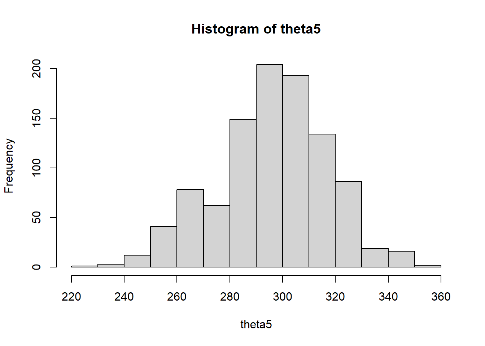
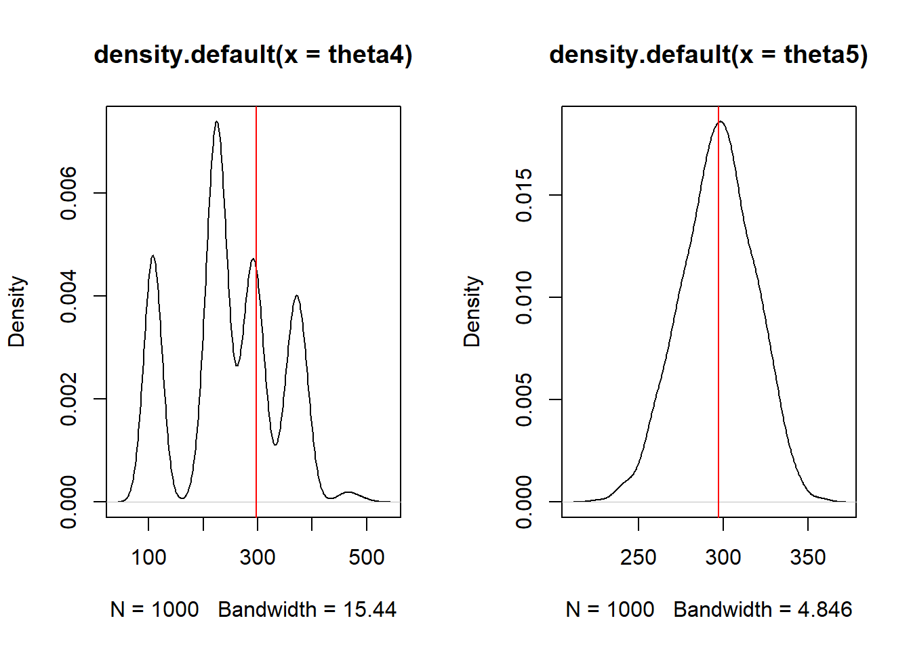
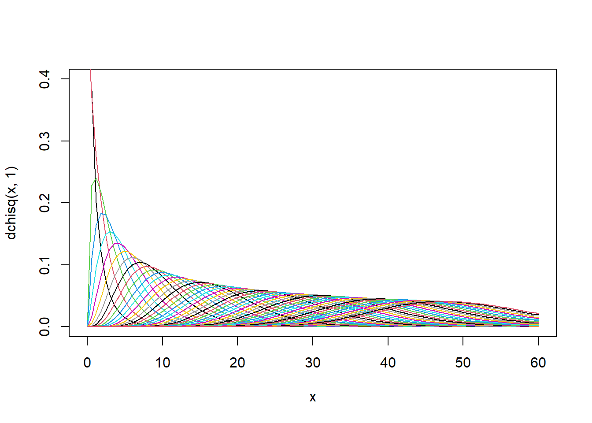
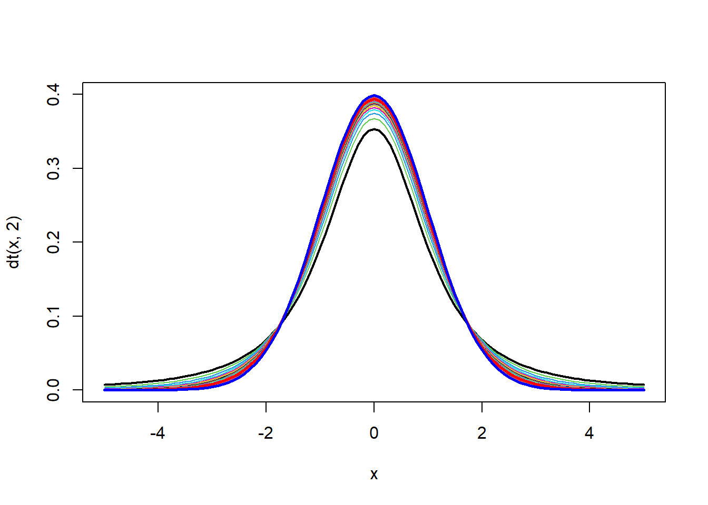
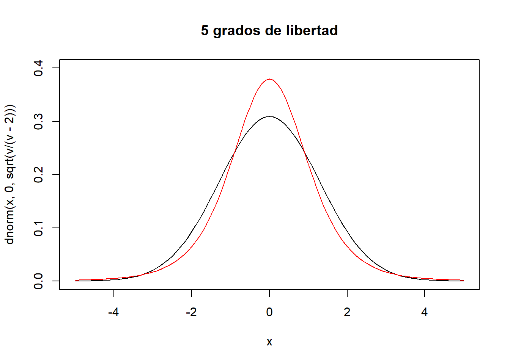
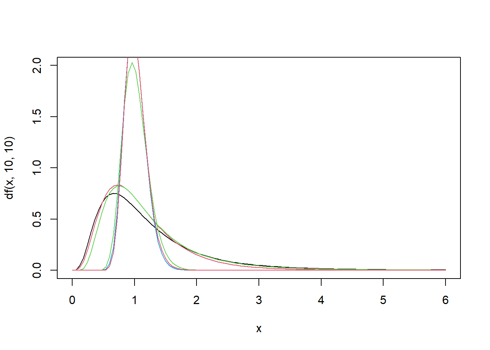
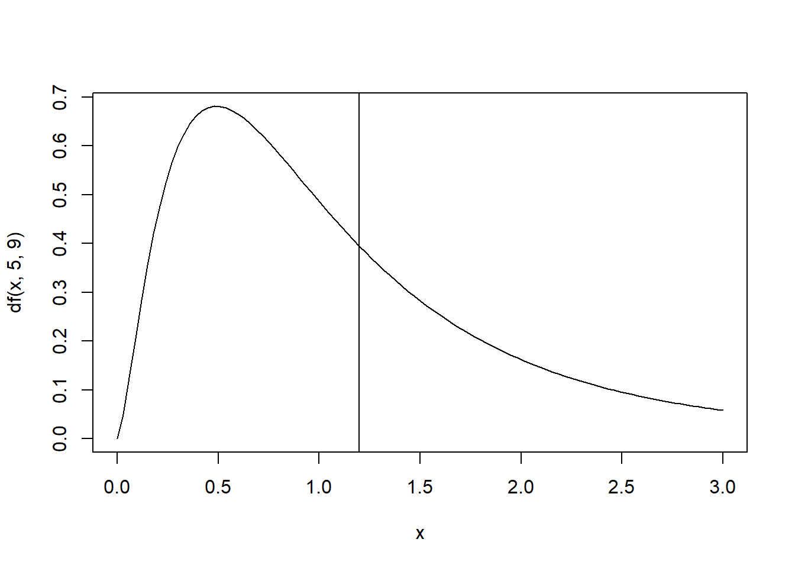

2 Tema 2: Distribuciones muestrales
A partir de este tema la estadística esta vinculada con la inferencia sobre los parámetros de la información/datos.
2.1 Muestras y población
Definición: Una población es una colección “completa” de objetos, estos objetos tienen variables.
Sea nuestra población \(U\), esta población puede ser finita o infinita
\[U=\{u_1, u_2, \ldots , u_i,...,u_N \}\]
\[U=\{u_1, u_2, \ldots , u_i,... \}\]
Cada elemento de \(U\) tiene variables o características asociadas:
\[u_i=\{X_{i1}, X_{i2}, \ldots, X_{iP} \}\] \[u_j=\{X_{j1}, X_{j2}, \ldots, X_{jP} \}\]
Definición, Muestra: Una muestra es un subconjunto de U.
\[s \subset U ,\quad s \in U \quad\]
Donde \(s\) representa al conjunto denominado “muestra”
Normalmente una muestra tiene un tamaño \(n\) (puede ser fijo y aleatorio), el mecanismo para obtener la muestra de \(U\) puede ser con reposición o sin reposición, en cualquier caso podemos anotar esto de la siguiente forma, sea \(s\) una muestra:
\[s=\{u_{1}^*,u_2^*, \ldots, u_n^*\}\] En un caso extremo para el muestreo con reposición
\[u_i^*=u_j^* \quad i,j=1, \ldots ,n\]
Note que los elementos \(u_1\) y \(u_1^*\) no necesariamente son los mismos.
Ejemplo de un tamaño de muestra aleatorio: Se tiene una población de 53 elementos, para decidir quien es parte de la muestra se lanza un dado para cada elemento. Si el dado sale 1 el elemento es parte de la muestra, si sale cualquier otro número, ele elemento no es parte de la muestra.
Una característica ideal al momento de obtener la muestra, es que todos los elementos de la población tengan alguna probabilidad de ser parte de la muestra. (Esto depende del esquema de selección)
El subconjunto \(s\) no es único y en realidad existen muchas muestras posibles, según el contexto, esto depende:
- Del tamaño de \(N\), \(n\)
- Del mecanismo s/rep, c/rep.
Problema:
Sea el conjunto \(U={a,b,c,d,e,f,g,h,i,j}\), se pide calcular para ambos mecanismos de selección, la cantidad de muestras posibles; cuando \(n=3\), \(n=4\) y \(n=7\).
- Sin reposición:
- \(n=3\), 120
- \(n=4\), 210
- \(n=7\), 120
- Con reposición:
- \(n=3\), \(1000\)
- \(n=4\), \(10^4\)
- \(n=7\), \(10^7\)
Ejemplo,
- Sea la población \(U=\{a,b,c,d,e,f\}\), se define una muestra de \(n=3\), escriba todas las muestras posibles según ambos mecanismos de reposición.
Solución,
- (s/rep), 20: \(s_1=\{a,b,c\}\), \(s_2=\{a,b,d \}\), \(\ldots\) ,\(s_{20}=\{d,e,f\}\)
- (c/rep), 216: \(s_1=\{a,a,a\}\), \(s_2=\{a,a,b\}\), \(\ldots\), \(s_{216}=\{f,f,f\}\)
N<-6;n<-3
choose(N,n)## [1] 20U<-c("a","b","c","d","e","f")
combn(U,n)## [,1] [,2] [,3] [,4] [,5] [,6]
## [1,] "a" "a" "a" "a" "a" "a"
## [2,] "b" "b" "b" "b" "c" "c"
## [3,] "c" "d" "e" "f" "d" "e"
## [,7] [,8] [,9] [,10] [,11]
## [1,] "a" "a" "a" "a" "b"
## [2,] "c" "d" "d" "e" "c"
## [3,] "f" "e" "f" "f" "d"
## [,12] [,13] [,14] [,15] [,16]
## [1,] "b" "b" "b" "b" "b"
## [2,] "c" "c" "d" "d" "e"
## [3,] "e" "f" "e" "f" "f"
## [,17] [,18] [,19] [,20]
## [1,] "c" "c" "c" "d"
## [2,] "d" "d" "e" "e"
## [3,] "e" "f" "f" "f"N^n## [1] 216- En una población de 58 estudiantes, si se define una muestra de 15 estudiantes, según ambos mecanismos de selección ¿Cuántas muestras se pueden armar?
- (s/r) 2.9752626^{13}
- (c/r) 2.8276126^{26} Doscientos ochenta y dos cuatrillones setecientos sesenta y un mil doscientos cincuenta y seis trillones ochocientos ochenta y un mil doscientos noventa y siete billones trescientos tres mil setecientos seis millones seiscientos sesenta y seis mil cuatrocientos cuatro
- En la carrera de informática de la UMSA se planea realizar una encuesta de opinión con una muestra de 200 estudiantes, según ambos mecanismos de selección ¿Cuántas muestras se pueden armar? (Suponer que \(N=2500\))
- s/r: 13750504940386732907426482044088242840008688608422088462248622008668200400608248460880626448288804800424086882008020260604628484282664848664888482402462868880466408484286482882842486466444284028422444028868608862606880888224440880420680442862806886006626280828468462800008284000620266020286044062620664
- c/r, \(2500^{200}\)
Sin reposición:
\[Muestras_{Posibles}=\binom{N}{n}=\frac{N!}{(N-n)!n!}\]
Con reposición (el orden importa):
\[Muestras_{Posibles}=N^n\]
Imaginemos a la primera variable de interés \(X_1\), para el universo esta variable tiene los elementos:
\[X_1=\{X_{11}, X_{21}, X_{31}, \ldots, X_{N1}\}\]
Imaginemos que observamos a \(X_1\), para la muestra.
\[X_1^*=\{X_{11}^*, X_{21}^*, X_{31}^*, \ldots, X_{n1}^* \}\]
Estos \(X_{i1}^*\) para los \(i=1,\ldots,n\) son variables aleatorias. Por lo tanto \(X_1^*\) es un vector aleatorio de tamaño \(n\).
De ahora en adelante vamos a trabajar con un solo vector aleatorio denominado \(X\), de tal forma que este sea la colección de \(n\) variables aleatorias.
\[X=\{X_1,X_2,\ldots,X_n \}\]
Definición.
La colección del vector aleatorio \(X=\{X_1,X_2,\ldots,X_n \}\), son independientes e idénticamente distribuidas (iid) si la distribución conjunta de las \(n\) variables puede ser escrita como:
\[f(x_1,x_2,\ldots,x_n)=f(x_1)*f(x_2)*\ldots*f(x_n)\]
y además todas las \(x_i\) tienen la misma función de distribución \(F(x)\).
Nota: El criterio iid se cumple si:
- Se asume un muestreo con reposición (el orden importa)
- Se asume un muestreo sin reposición pero la muestra tiende al infinito
Definición
Sea \(N\) el tamaño de la población y \(n\) el tamaño de la muestra, ambos valores para fines de este capítulo son constantes.
2.2 Parámetros, estadísticas y estimadores.
El objetivo de la estadística es aprender acerca de las características de una población. Estas características las vamos a llamar parámetros.
Definición,
Un parámetro \(\theta\) es una función sobre la población \(U\).
\[\theta=f(U,X,Y,Z,\ldots)\]
Nota: Los parámetros de una población son constantes.
Los parámetros más usuales son, el total, la media, la proporción, la varianza, las razones.
Ejemplo,
Sea el universo los 10 primeros números naturales y sus valores. \(Y=\{1,2,3,4,5,6,7,8,9,10\}\). Sobre estos valores de esta población de \(N=10\) se pueden calcular los siguientes parámetros.
- Total
\[\theta_1=t_y=\sum_U y_i=55\]
- Media
\[\theta_2=\mu_y=\frac{t_y}{N}=\frac{55}{10}=5.5\]
Máximo: \(\theta_3=max(y)=10\)
Mínimo: \(\theta_4=min(y)=1\)
Proporción
\[P_{pares}=\frac{5}{10}=0.5\]
Es posibles hacer transformaciones sobre \(Y\), sea \(Z\) una variables binaria que identifique a los números primos de \(Y\); \(1=primo\), \(0=\sim primo\).
\[Z=\{1,1,1,0,1,0,1,0,0,0 \}\]
Calcular el promedio de \(Z\)
\[\theta_5=\mu_z=\frac{5}{10}=0.5\]
Cuando obtenemos la media de un vector binario, obtenemos lo que se denomina una proporción de la característica que define el valor de 1.
\[\theta_5=P_a=\frac{\#A}{N}\]
\[\theta_5=P_{primos}=\frac{\#primos}{N}\]
- Diferencias de medias: asume que tenemos a 2 poblaciones de interés, de tamaño \(N_1\) y \(N_2\)
\[\theta_6=\mu_1-\mu_2\]
- Diferencias de proporciones: asume que tenemos a 2 poblaciones de interés, de tamaño \(N_1\) y \(N_2\)
\[\theta_7=P_1-P_2\]
Definición, estadística
Se denomina estadística a una función sobre la muestra.
Definición, estimador
Un estimador \(\hat{\theta}\) para el parámetro \(\theta\) es una estadística que busca aproximar/adivinar el valor de \(\theta\)
\[Aleatorio\quad:f(s,X)=\hat{\theta} \rightarrow \theta=f(U,X): \quad fijo\] Notar que el estimador es una variable aleatoria, ya que depende de las distribuciones muestrales. Cuando se aplica la función \(f(s,X)=\hat{\theta}\) sobre una única muestra seleccionada, se tiene la estimación.
Ejemplo
Usando los datos recolectados de un grupo de 44 (\(N=44\)) estudiantes respecto sus horas de sueño:
8, 9, 6, 8, 8, 7, 6, 2, 7, 7, 7, 6, 7, 8, 8, 5, 7, 7, 5, 8, 4, 6, 8, 8, 8, 7, 7, 6, 4, 8, 8, 6, 8, 4, 10, 7, 6, 7, 6, 8, 5, 6, 8, 6
Se calculó el total de horas de sueño:
\[\theta=t_{sueño}=297\] Supongamos que no tenemos conocimiento del 297, pero sí tenemos acceso a una muestra de 8 estudiantes de estos 44, a los cuales se les pregunto sus horas de sueño, las respuestas dadas fueron:
7, 8, 6, 5, 8, 8, 7, 6.
x<-c(8, 9, 6, 8, 8, 7, 6, 2, 7, 7, 7, 6, 7, 8, 8, 5, 7, 7, 5, 8, 4, 6, 8, 8, 8, 7, 7, 6, 4, 8, 8, 6, 8, 4, 10, 7, 6, 7, 6, 8, 5, 6, 8, 6)
set.seed(999)
s<-sample(x,8)
set.seed(9999)
s2<-sample(x,8)Proponer algún estimador (función) que use estos 8 datos de la muestra y que aproxime el valor del parámetro.
\[\hat{\theta}_1=\bar{x}_{mod}*\bar{x}_{med}*min(x)\] \[\hat{\theta}_2=min(x)*\sum_s x_i+\frac{max(x)*min(x)}{2}\] \[\hat{\theta}_3=max(x)*min(x)^2+97\] \[\hat{\theta}_4= min(x)*\sum_s x_i+\frac{\sum_s x_i}{max(x)-min(x)}\] \[\hat{\theta}_5=\frac{\sum_s x_i}{n}*N\] Veamos las estimaciones para cada estimador con la muestra selecciona.
\[\hat{\theta}_1=280\] \[\hat{\theta}_2=295\] \[\hat{\theta}_3=297\] \[\hat{\theta}_4=293.33\] \[\hat{\theta}_5=302.5\] Ahora imaginemos que tenemos una segunda muestra: 6, 7, 5, 6, 6, 7, 9, 2. Aplicar sobre esta muestra los 5 estimadores antes definidos.
- \(\hat{\theta}_1=72\)
- \(\hat{\theta}_2=105\)
- \(\hat{\theta}_3=133\)
- \(\hat{\theta}_4=102.9\)
- \(\hat{\theta}_5=264\)
¿Cómo evaluamos la calidad de un estimador?
Es importante conocer las propiedades asociadas a los estimadores, es decir como se comportan con las distintas muestras posibles.
sample(x,8)## [1] 8 7 6 10 7 8 5 7tt4<-function(y){
yy<-min(y)*sum(y)+(sum(y)/(max(y)-min(y)))
return(yy)
}
tt5<-function(y){
yy<-mean(y)*44
return(yy)
}
k<-1000
theta4<-NULL
theta5<-NULL
for(i in 1:k){
ss<-sample(x,8)
print(ss)
theta4[i]<-tt4(ss)
theta5[i]<-tt5(ss)
}## [1] 7 8 5 8 8 6 4 8
## [1] 7 8 5 6 6 10 8 8
## [1] 8 7 10 8 6 6 6 7
## [1] 6 10 8 9 6 6 2 4
## [1] 5 8 6 7 6 6 8 5
## [1] 8 6 6 8 8 8 6 6
## [1] 5 5 8 6 6 7 6 7
## [1] 8 6 6 7 4 8 2 8
## [1] 5 8 4 8 4 7 7 6
## [1] 6 6 8 6 6 7 5 6
## [1] 6 10 7 9 6 8 7 7
## [1] 8 7 6 8 8 7 6 4
## [1] 2 8 8 8 6 6 4 8
## [1] 8 4 6 7 7 6 7 8
## [1] 7 8 6 6 6 2 6 5
## [1] 8 6 8 6 8 8 6 8
## [1] 7 8 7 8 6 7 6 6
## [1] 8 7 7 7 6 8 6 10
## [1] 8 7 6 4 6 8 4 7
## [1] 5 6 9 7 7 2 4 8
## [1] 4 7 4 7 6 6 7 5
## [1] 6 4 4 7 8 6 2 6
## [1] 6 6 8 8 5 6 5 8
## [1] 7 8 6 7 6 7 4 6
## [1] 7 7 9 6 8 7 8 8
## [1] 8 7 6 8 5 7 4 4
## [1] 6 8 7 4 5 2 7 6
## [1] 5 4 10 7 7 8 6 7
## [1] 8 4 2 6 7 6 6 8
## [1] 4 6 8 6 4 8 5 8
## [1] 9 7 8 8 8 8 4 8
## [1] 8 6 4 8 6 4 7 5
## [1] 10 7 5 4 8 7 4 7
## [1] 2 6 6 8 4 8 7 8
## [1] 7 8 5 7 8 6 8 6
## [1] 8 6 4 7 6 8 6 7
## [1] 4 8 8 2 6 7 7 7
## [1] 2 6 8 8 6 8 6 7
## [1] 8 8 7 8 8 8 8 6
## [1] 8 7 5 6 8 2 8 7
## [1] 8 4 8 8 8 6 10 8
## [1] 5 7 6 8 7 6 2 8
## [1] 4 8 7 7 6 7 8 8
## [1] 7 8 7 6 8 6 6 7
## [1] 7 8 7 7 6 7 6 6
## [1] 8 5 8 8 6 6 8 6
## [1] 9 5 6 8 7 7 7 8
## [1] 8 7 4 7 6 7 8 6
## [1] 7 4 8 6 8 7 8 6
## [1] 6 4 6 7 8 7 6 8
## [1] 7 2 6 8 6 7 8 6
## [1] 7 7 7 6 4 6 5 6
## [1] 8 7 8 8 7 4 7 10
## [1] 8 8 9 5 6 2 8 4
## [1] 8 7 6 7 8 5 8 6
## [1] 8 6 7 6 7 8 4 6
## [1] 8 5 9 8 8 7 6 7
## [1] 8 6 6 7 7 8 2 7
## [1] 10 7 8 7 7 7 6 7
## [1] 6 7 6 6 7 7 6 6
## [1] 8 7 8 7 10 9 8 8
## [1] 8 10 6 6 2 5 6 8
## [1] 6 8 7 8 6 7 4 5
## [1] 7 6 6 4 6 8 8 9
## [1] 6 8 8 6 4 7 9 4
## [1] 7 8 8 7 4 8 8 5
## [1] 7 7 6 8 6 8 5 8
## [1] 7 6 7 8 7 9 10 8
## [1] 8 2 6 7 8 7 8 7
## [1] 8 7 5 6 8 7 8 6
## [1] 7 5 6 7 6 8 6 8
## [1] 7 8 6 7 2 7 8 10
## [1] 7 8 6 6 7 6 8 6
## [1] 6 8 7 6 8 7 7 8
## [1] 8 8 6 7 7 7 8 7
## [1] 6 5 6 8 6 7 8 7
## [1] 8 8 8 8 8 6 8 6
## [1] 8 4 7 5 8 8 8 8
## [1] 7 7 8 6 7 4 8 6
## [1] 6 2 9 6 7 6 8 6
## [1] 7 8 8 5 8 4 8 10
## [1] 4 7 5 7 9 7 8 8
## [1] 7 8 8 8 6 6 8 4
## [1] 5 7 7 6 7 6 7 7
## [1] 6 8 5 7 8 6 4 8
## [1] 7 2 6 8 8 8 6 10
## [1] 6 6 7 8 4 7 8 6
## [1] 2 7 8 8 6 6 6 4
## [1] 8 7 8 8 6 6 5 9
## [1] 6 10 8 6 4 8 7 8
## [1] 9 7 8 8 10 8 6 4
## [1] 8 8 7 7 8 7 8 6
## [1] 6 6 8 8 6 8 8 8
## [1] 6 8 5 8 7 7 6 8
## [1] 8 8 6 4 6 8 8 7
## [1] 8 8 7 8 6 8 6 6
## [1] 8 4 6 2 8 8 8 7
## [1] 4 5 6 8 8 5 6 8
## [1] 8 8 6 8 8 8 8 6
## [1] 6 8 6 5 7 6 7 8
## [1] 4 7 6 8 8 7 6 7
## [1] 8 5 6 6 8 8 6 6
## [1] 7 6 5 8 7 8 7 7
## [1] 8 6 6 10 8 8 6 7
## [1] 8 8 10 8 7 7 7 5
## [1] 6 6 7 8 4 6 7 5
## [1] 6 8 7 7 5 8 8 6
## [1] 6 7 7 6 8 7 2 7
## [1] 8 7 8 6 7 7 8 10
## [1] 8 7 6 7 7 7 6 4
## [1] 4 9 7 6 4 6 4 7
## [1] 7 8 7 6 8 6 6 5
## [1] 10 8 8 8 8 4 2 7
## [1] 6 7 6 10 7 6 8 4
## [1] 6 7 8 6 6 8 8 7
## [1] 6 6 8 8 7 4 7 7
## [1] 8 8 6 8 6 8 7 8
## [1] 8 7 2 6 5 8 6 4
## [1] 7 8 6 6 7 6 6 9
## [1] 6 6 5 8 7 6 6 8
## [1] 6 6 5 9 7 8 6 8
## [1] 6 8 7 7 7 7 8 8
## [1] 7 8 8 10 7 4 6 8
## [1] 8 7 10 8 8 7 8 7
## [1] 4 6 8 8 7 6 6 7
## [1] 2 6 7 8 7 9 8 6
## [1] 8 5 6 5 8 8 7 7
## [1] 7 4 7 5 7 6 7 5
## [1] 7 8 5 8 4 7 6 8
## [1] 7 8 2 5 8 6 7 8
## [1] 5 8 5 6 4 6 8 6
## [1] 6 8 6 5 6 7 5 10
## [1] 8 8 8 7 6 6 8 2
## [1] 6 5 7 4 7 8 8 8
## [1] 8 8 6 7 8 5 7 6
## [1] 8 6 8 8 6 7 2 6
## [1] 5 8 6 4 8 9 6 4
## [1] 7 7 5 6 8 8 7 8
## [1] 7 7 8 6 6 5 8 7
## [1] 4 6 7 7 8 9 7 6
## [1] 8 5 8 7 8 2 8 4
## [1] 7 6 10 8 8 7 6 8
## [1] 8 7 8 4 6 2 6 4
## [1] 6 6 9 4 8 7 6 6
## [1] 8 8 7 7 8 6 6 6
## [1] 7 2 10 6 8 8 6 5
## [1] 8 8 6 8 6 7 4 8
## [1] 5 8 6 8 7 6 6 8
## [1] 7 5 6 8 7 8 8 6
## [1] 7 8 4 7 8 7 6 8
## [1] 6 7 8 2 8 5 8 7
## [1] 6 6 7 6 8 8 8 5
## [1] 6 7 7 8 6 7 8 9
## [1] 7 6 8 8 7 8 8 8
## [1] 6 7 6 8 7 8 8 9
## [1] 6 8 7 8 7 8 7 5
## [1] 4 8 5 4 8 6 8 6
## [1] 6 7 7 7 7 5 6 8
## [1] 8 7 8 8 6 7 7 8
## [1] 6 8 8 7 5 8 7 8
## [1] 2 6 7 7 7 5 8 6
## [1] 10 6 8 6 7 8 6 8
## [1] 8 7 8 10 7 6 8 8
## [1] 8 8 8 8 7 4 8 7
## [1] 5 6 8 8 7 6 8 6
## [1] 4 6 8 8 9 8 7 5
## [1] 7 6 4 8 6 7 8 8
## [1] 7 8 4 5 8 6 6 6
## [1] 8 5 8 4 8 7 7 6
## [1] 8 8 7 5 8 8 6 2
## [1] 4 8 8 8 6 8 7 6
## [1] 6 7 8 8 6 5 2 6
## [1] 8 5 10 5 7 6 6 7
## [1] 7 7 6 7 4 8 8 8
## [1] 7 6 6 4 4 6 8 6
## [1] 6 8 10 8 6 6 8 5
## [1] 5 6 6 6 10 7 6 7
## [1] 8 6 8 5 6 8 7 4
## [1] 7 5 7 6 2 5 7 7
## [1] 8 7 8 7 7 6 7 6
## [1] 8 8 10 7 7 4 7 4
## [1] 6 5 7 6 6 8 5 6
## [1] 8 7 6 5 7 2 7 9
## [1] 6 8 7 6 6 6 8 6
## [1] 6 4 6 8 7 6 5 6
## [1] 7 7 4 7 8 6 8 5
## [1] 8 8 6 8 6 8 8 8
## [1] 7 6 10 8 8 7 7 8
## [1] 6 6 7 8 8 8 7 8
## [1] 7 8 2 5 5 8 8 8
## [1] 8 6 2 7 8 8 6 7
## [1] 6 8 6 4 7 6 6 7
## [1] 6 2 9 4 8 7 8 4
## [1] 8 8 6 7 7 8 5 8
## [1] 7 8 6 7 7 8 7 8
## [1] 8 5 8 6 6 9 6 4
## [1] 8 8 6 9 8 8 8 7
## [1] 6 6 5 8 4 8 7 8
## [1] 6 8 9 7 7 8 8 7
## [1] 7 10 8 8 6 6 6 8
## [1] 4 8 8 7 6 7 4 5
## [1] 7 7 7 7 8 8 4 8
## [1] 8 6 8 8 8 6 7 7
## [1] 8 8 8 8 7 10 8 8
## [1] 8 8 8 7 6 7 8 2
## [1] 8 6 8 5 8 7 7 7
## [1] 8 8 6 7 8 6 5 6
## [1] 7 6 6 7 7 4 7 6
## [1] 10 5 8 6 7 6 7 8
## [1] 8 9 8 6 8 6 8 8
## [1] 8 5 7 10 6 7 7 7
## [1] 4 8 10 8 9 7 7 7
## [1] 4 5 7 8 6 2 8 7
## [1] 6 7 8 9 6 8 2 8
## [1] 10 4 6 8 8 6 8 8
## [1] 5 8 5 8 7 7 6 8
## [1] 4 5 7 7 8 4 4 8
## [1] 4 7 6 8 6 7 7 6
## [1] 8 5 6 6 7 8 9 7
## [1] 8 6 5 7 8 7 8 9
## [1] 7 4 7 7 7 8 8 7
## [1] 8 6 6 8 8 7 8 8
## [1] 8 7 7 6 6 8 8 7
## [1] 10 8 6 6 8 7 6 8
## [1] 6 8 7 6 7 4 8 6
## [1] 6 7 6 7 7 8 6 8
## [1] 6 4 7 9 7 8 7 6
## [1] 8 8 8 6 7 8 4 9
## [1] 8 7 4 5 8 8 8 2
## [1] 6 8 8 6 7 7 6 8
## [1] 8 7 8 7 7 7 6 4
## [1] 7 8 6 8 8 8 8 7
## [1] 7 7 6 7 7 5 6 7
## [1] 7 6 7 8 6 7 8 10
## [1] 6 6 7 10 7 6 8 8
## [1] 8 8 7 7 5 8 8 8
## [1] 8 6 7 8 6 8 6 6
## [1] 7 8 7 7 7 8 8 9
## [1] 6 4 7 8 7 8 6 7
## [1] 4 2 6 9 7 8 7 6
## [1] 8 5 7 7 7 6 4 6
## [1] 7 6 6 8 8 8 7 8
## [1] 8 8 8 6 6 8 8 7
## [1] 2 8 8 5 9 7 6 8
## [1] 5 4 6 9 8 6 7 8
## [1] 8 8 8 8 8 8 7 4
## [1] 7 9 5 8 6 2 5 7
## [1] 7 6 7 7 7 8 6 8
## [1] 8 9 7 5 8 8 7 8
## [1] 7 8 4 7 5 6 8 8
## [1] 4 6 7 6 6 8 8 8
## [1] 5 8 8 7 8 8 8 8
## [1] 6 8 8 6 7 8 6 2
## [1] 4 8 2 7 7 8 8 5
## [1] 7 5 8 8 7 8 4 8
## [1] 6 7 5 7 8 6 6 7
## [1] 4 9 7 7 8 4 5 7
## [1] 5 8 8 7 8 8 6 6
## [1] 6 6 8 7 8 4 8 7
## [1] 5 7 6 5 8 8 7 7
## [1] 8 6 7 7 7 6 8 6
## [1] 6 7 8 7 8 8 8 6
## [1] 8 8 8 6 5 8 10 7
## [1] 7 10 8 7 6 5 8 8
## [1] 5 8 8 6 2 7 6 6
## [1] 7 7 8 5 8 6 8 6
## [1] 6 7 6 9 4 6 5 6
## [1] 8 8 9 4 10 7 5 6
## [1] 6 8 5 4 6 7 6 7
## [1] 8 8 2 8 7 8 5 8
## [1] 8 7 4 8 2 7 6 4
## [1] 8 8 9 10 6 6 7 6
## [1] 8 9 7 5 6 10 8 7
## [1] 7 4 6 7 6 8 8 8
## [1] 8 4 7 6 7 5 8 6
## [1] 9 6 4 6 8 5 2 7
## [1] 7 6 7 6 8 7 8 5
## [1] 5 8 6 7 7 8 6 6
## [1] 7 8 6 4 8 8 6 5
## [1] 6 6 5 10 8 7 6 4
## [1] 2 7 6 7 5 8 8 4
## [1] 6 7 6 5 6 7 8 7
## [1] 6 7 7 9 2 10 7 4
## [1] 8 4 8 6 6 7 8 6
## [1] 7 6 2 6 6 7 6 7
## [1] 8 6 4 7 6 4 6 8
## [1] 4 8 8 6 8 5 9 6
## [1] 8 7 7 6 6 5 4 7
## [1] 7 8 5 4 6 10 4 5
## [1] 4 2 8 7 8 5 7 6
## [1] 7 8 4 6 5 8 8 7
## [1] 4 9 5 7 7 6 8 10
## [1] 6 6 7 4 5 4 8 9
## [1] 8 4 8 7 6 2 6 8
## [1] 6 2 5 10 4 6 9 8
## [1] 6 6 8 8 6 7 7 5
## [1] 7 6 7 5 8 10 4 7
## [1] 8 6 7 8 6 6 6 8
## [1] 7 6 6 4 7 9 8 4
## [1] 10 6 6 5 6 5 8 8
## [1] 8 6 9 8 7 7 8 6
## [1] 6 6 6 8 7 7 5 8
## [1] 8 7 8 5 7 8 8 6
## [1] 7 7 8 8 7 8 5 9
## [1] 6 7 8 8 7 6 6 6
## [1] 8 8 10 7 6 6 8 7
## [1] 6 7 7 6 5 8 4 7
## [1] 5 8 8 5 7 10 8 6
## [1] 6 7 7 8 6 8 7 8
## [1] 7 8 6 8 6 8 8 8
## [1] 7 8 6 5 7 6 7 9
## [1] 7 6 8 7 7 7 7 8
## [1] 8 8 7 8 7 6 8 6
## [1] 5 7 8 4 8 8 6 8
## [1] 7 8 7 8 6 8 8 6
## [1] 7 5 8 10 7 7 6 8
## [1] 8 7 7 5 4 6 8 2
## [1] 10 7 6 7 5 8 8 7
## [1] 8 7 7 8 6 8 4 8
## [1] 8 8 6 4 7 2 7 8
## [1] 7 8 6 8 7 6 7 8
## [1] 5 2 7 7 6 7 8 7
## [1] 2 8 8 7 8 6 8 8
## [1] 7 6 6 8 6 8 4 8
## [1] 9 6 10 8 7 8 6 6
## [1] 8 8 7 7 6 6 8 8
## [1] 7 8 8 6 6 2 4 10
## [1] 6 10 8 5 8 6 6 6
## [1] 6 6 8 6 7 7 6 7
## [1] 7 8 8 6 6 7 7 7
## [1] 6 4 7 7 8 7 8 6
## [1] 10 4 6 7 8 6 5 7
## [1] 7 6 6 6 5 7 9 5
## [1] 7 7 6 8 6 7 7 7
## [1] 9 7 6 8 8 6 5 8
## [1] 8 6 8 7 7 8 7 4
## [1] 7 7 6 6 4 6 6 8
## [1] 6 7 5 4 7 8 6 2
## [1] 7 2 8 5 7 7 6 7
## [1] 4 8 2 7 4 5 8 6
## [1] 6 6 7 5 8 4 4 7
## [1] 6 7 4 6 9 8 8 6
## [1] 8 8 6 7 6 7 8 7
## [1] 7 6 7 6 8 8 7 6
## [1] 6 8 8 8 8 7 8 6
## [1] 8 6 8 7 4 7 7 8
## [1] 7 8 5 8 8 4 7 8
## [1] 8 8 7 6 2 7 7 6
## [1] 8 8 8 8 5 8 6 5
## [1] 4 7 5 8 2 5 6 4
## [1] 7 6 8 6 6 6 4 9
## [1] 8 8 6 7 8 7 8 7
## [1] 8 8 7 8 7 8 5 7
## [1] 5 5 8 4 6 8 8 8
## [1] 6 8 6 6 8 6 4 6
## [1] 6 6 7 8 6 7 8 8
## [1] 8 8 4 7 8 7 7 6
## [1] 7 6 6 7 5 8 6 8
## [1] 8 2 8 4 6 8 7 6
## [1] 7 7 7 8 8 8 6 7
## [1] 7 7 7 4 8 8 9 5
## [1] 8 4 9 5 6 6 6 8
## [1] 6 8 10 8 6 2 5 8
## [1] 6 8 8 8 5 10 7 8
## [1] 10 7 8 6 7 4 8 8
## [1] 6 7 8 8 8 8 2 7
## [1] 7 8 8 7 8 6 5 8
## [1] 5 6 8 7 8 6 7 4
## [1] 6 7 8 8 6 4 7 8
## [1] 8 6 5 8 8 6 5 8
## [1] 6 7 8 7 7 7 7 7
## [1] 6 8 7 8 8 4 6 4
## [1] 8 7 7 7 7 8 7 7
## [1] 7 4 4 8 6 7 9 6
## [1] 6 7 8 7 7 7 10 8
## [1] 7 8 6 7 7 7 6 4
## [1] 6 8 10 7 7 6 7 8
## [1] 6 8 7 6 6 8 4 5
## [1] 5 6 5 6 7 8 8 6
## [1] 6 8 6 7 8 5 7 4
## [1] 7 5 8 8 4 5 2 5
## [1] 5 8 8 9 6 7 8 8
## [1] 8 6 6 7 7 8 6 5
## [1] 7 8 8 8 10 6 6 5
## [1] 7 7 8 8 7 6 6 6
## [1] 7 5 7 8 8 7 8 6
## [1] 7 10 7 5 6 4 4 7
## [1] 8 4 8 7 7 8 6 8
## [1] 6 6 7 9 5 8 10 6
## [1] 7 7 8 8 4 7 6 5
## [1] 8 7 7 8 7 8 5 9
## [1] 5 6 6 8 8 8 8 6
## [1] 8 7 8 7 8 7 4 7
## [1] 7 5 4 7 7 7 8 6
## [1] 6 8 7 6 7 5 7 8
## [1] 6 5 7 7 2 8 8 6
## [1] 7 7 6 8 9 6 8 7
## [1] 8 6 6 2 4 7 8 7
## [1] 6 8 6 7 5 6 4 7
## [1] 5 5 6 6 6 8 10 6
## [1] 7 8 6 4 4 6 7 7
## [1] 7 7 6 6 6 8 8 8
## [1] 7 8 5 7 4 7 8 7
## [1] 7 8 8 6 8 5 6 7
## [1] 5 8 6 6 8 7 7 4
## [1] 7 8 6 7 6 8 8 6
## [1] 7 5 8 7 2 6 8 8
## [1] 5 9 6 7 7 8 8 6
## [1] 8 6 8 6 8 10 8 7
## [1] 7 8 7 7 8 5 9 6
## [1] 7 8 4 6 10 6 8 8
## [1] 8 7 7 7 10 7 9 8
## [1] 6 8 7 7 2 8 8 8
## [1] 8 6 5 8 4 7 7 7
## [1] 8 7 6 7 10 7 6 9
## [1] 6 8 8 7 6 7 6 7
## [1] 8 10 8 6 7 8 8 7
## [1] 6 6 7 8 2 8 5 7
## [1] 7 4 8 6 8 8 8 6
## [1] 8 8 6 5 7 7 7 6
## [1] 5 6 8 7 7 8 8 2
## [1] 8 8 4 8 5 8 6 5
## [1] 8 6 7 7 8 8 7 8
## [1] 8 8 6 8 7 6 7 5
## [1] 10 4 8 9 4 6 6 7
## [1] 7 6 8 6 7 8 8 7
## [1] 6 8 7 8 8 10 4 7
## [1] 6 8 6 5 6 6 7 6
## [1] 6 7 8 7 6 8 6 4
## [1] 8 6 10 7 4 7 6 8
## [1] 5 8 7 8 7 8 7 6
## [1] 8 8 8 8 9 5 8 7
## [1] 7 8 7 5 5 2 7 7
## [1] 4 6 6 7 8 7 5 7
## [1] 7 8 6 7 8 6 7 6
## [1] 6 6 6 6 7 7 8 9
## [1] 8 6 5 2 6 8 6 8
## [1] 4 7 8 8 5 5 7 8
## [1] 8 8 7 6 7 4 7 6
## [1] 8 7 5 7 8 7 4 8
## [1] 8 8 7 7 6 8 6 7
## [1] 8 4 7 7 8 7 7 8
## [1] 6 7 6 7 6 5 8 7
## [1] 4 6 9 8 5 5 8 8
## [1] 7 8 10 7 6 8 7 8
## [1] 6 8 8 2 7 6 4 8
## [1] 7 8 2 7 8 8 6 8
## [1] 5 4 5 8 8 7 6 7
## [1] 8 8 8 2 8 7 7 4
## [1] 6 6 8 5 7 7 6 7
## [1] 8 7 4 7 7 7 8 8
## [1] 6 8 4 8 8 6 6 6
## [1] 5 7 4 8 5 5 7 8
## [1] 2 6 8 6 6 8 8 5
## [1] 5 6 6 5 7 8 8 6
## [1] 6 5 6 7 8 8 5 6
## [1] 6 5 6 9 6 7 8 4
## [1] 5 7 8 7 8 8 5 7
## [1] 7 7 8 8 10 8 4 8
## [1] 8 2 6 8 7 4 8 8
## [1] 7 8 8 9 6 8 8 6
## [1] 8 7 7 7 8 7 5 7
## [1] 7 7 7 6 8 6 6 7
## [1] 6 2 8 8 6 6 10 8
## [1] 6 6 5 6 7 7 8 6
## [1] 6 8 9 8 6 4 8 8
## [1] 6 5 7 4 5 6 7 7
## [1] 8 5 8 6 7 2 8 4
## [1] 8 6 6 7 4 8 7 6
## [1] 8 7 8 6 8 8 7 8
## [1] 4 9 8 8 8 5 7 5
## [1] 8 8 7 7 5 6 6 7
## [1] 6 7 6 4 6 4 7 8
## [1] 8 8 6 8 5 4 2 7
## [1] 2 4 5 8 5 6 8 7
## [1] 6 7 8 10 7 8 8 8
## [1] 9 8 2 6 4 6 6 5
## [1] 6 7 10 8 8 8 6 8
## [1] 6 7 8 8 6 7 8 10
## [1] 8 5 8 8 7 9 7 6
## [1] 5 9 7 7 7 8 6 6
## [1] 7 8 6 8 8 7 5 8
## [1] 7 6 5 7 4 9 6 6
## [1] 7 5 6 6 2 8 7 8
## [1] 10 6 8 5 8 8 8 8
## [1] 8 6 8 8 6 6 2 7
## [1] 4 6 8 2 6 7 8 6
## [1] 7 6 6 7 8 8 7 8
## [1] 4 8 4 8 7 8 7 7
## [1] 8 6 4 8 7 6 6 8
## [1] 8 7 7 6 7 4 5 10
## [1] 5 7 6 8 4 8 7 7
## [1] 6 8 8 8 8 8 6 9
## [1] 8 8 9 7 6 5 8 7
## [1] 10 5 7 7 8 7 8 7
## [1] 4 6 6 7 7 4 8 6
## [1] 7 7 8 8 8 8 7 6
## [1] 8 6 7 8 6 7 8 6
## [1] 7 7 8 7 8 2 6 8
## [1] 6 8 7 7 7 8 8 8
## [1] 6 7 6 8 9 6 7 5
## [1] 8 7 4 6 5 8 6 6
## [1] 6 8 8 4 7 6 2 7
## [1] 6 8 4 6 6 8 6 6
## [1] 8 5 2 8 6 8 8 6
## [1] 6 7 8 8 8 8 6 10
## [1] 5 7 7 10 6 2 8 4
## [1] 7 6 8 8 7 7 8 8
## [1] 9 6 4 7 7 2 4 8
## [1] 8 6 6 6 8 6 8 6
## [1] 8 6 7 6 7 8 7 5
## [1] 4 9 8 8 6 5 7 8
## [1] 8 7 6 7 6 7 6 8
## [1] 8 6 4 8 8 4 7 8
## [1] 6 10 7 6 4 8 6 6
## [1] 6 8 8 8 7 8 8 5
## [1] 7 6 7 8 7 2 6 8
## [1] 7 8 8 7 4 8 6 6
## [1] 6 5 7 5 8 7 8 8
## [1] 8 7 8 8 2 8 7 8
## [1] 8 8 6 7 6 7 6 6
## [1] 4 7 10 6 7 7 8 4
## [1] 8 8 4 8 8 7 7 8
## [1] 7 7 4 8 6 8 8 8
## [1] 8 7 7 10 6 5 7 8
## [1] 8 6 8 8 4 7 8 5
## [1] 7 8 7 7 8 6 4 5
## [1] 8 8 8 7 8 8 6 5
## [1] 7 8 7 8 9 10 8 2
## [1] 7 8 4 6 8 8 8 6
## [1] 6 7 8 7 5 8 7 7
## [1] 8 6 7 8 6 4 7 6
## [1] 4 6 7 7 8 5 7 7
## [1] 8 8 6 7 6 8 6 6
## [1] 6 8 9 7 8 8 6 4
## [1] 5 5 5 8 6 9 7 7
## [1] 2 8 8 8 6 6 6 4
## [1] 6 5 7 6 6 7 7 6
## [1] 6 8 7 6 7 8 7 6
## [1] 4 7 7 2 7 10 5 8
## [1] 7 4 8 2 7 8 8 6
## [1] 10 7 8 8 6 5 4 8
## [1] 6 6 7 8 9 6 8 7
## [1] 7 5 7 8 5 6 7 8
## [1] 7 8 8 7 7 6 7 2
## [1] 8 7 6 5 6 8 7 4
## [1] 8 6 7 6 6 7 7 8
## [1] 8 7 6 4 6 5 7 8
## [1] 9 8 8 5 4 6 6 8
## [1] 7 4 8 8 7 5 8 10
## [1] 6 5 4 8 8 8 10 8
## [1] 6 8 8 6 8 2 9 4
## [1] 8 6 10 7 7 8 8 6
## [1] 7 8 8 8 8 7 6 8
## [1] 7 8 8 8 8 6 6 8
## [1] 6 7 6 8 8 8 8 8
## [1] 8 10 9 7 7 2 8 6
## [1] 2 6 8 7 8 5 6 6
## [1] 8 4 7 8 7 7 6 8
## [1] 8 8 7 8 5 7 8 6
## [1] 8 8 7 7 2 7 6 7
## [1] 6 8 8 8 7 7 6 5
## [1] 4 7 6 7 7 8 6 6
## [1] 5 9 8 4 8 6 6 2
## [1] 6 7 6 8 6 7 8 8
## [1] 6 7 9 7 8 8 2 6
## [1] 2 5 7 7 8 4 7 7
## [1] 8 8 8 7 8 2 5 10
## [1] 6 7 10 7 8 7 5 8
## [1] 4 8 6 5 6 6 7 8
## [1] 8 8 6 8 7 6 6 6
## [1] 6 8 8 7 5 8 8 7
## [1] 7 7 8 7 2 5 6 6
## [1] 7 6 6 5 7 6 6 7
## [1] 8 8 7 9 6 7 7 6
## [1] 6 4 7 6 8 4 8 5
## [1] 5 8 7 10 6 8 6 4
## [1] 5 7 8 7 2 8 6 8
## [1] 8 6 7 8 7 4 8 8
## [1] 6 8 6 10 4 6 2 7
## [1] 8 8 4 7 7 7 9 8
## [1] 8 6 2 9 7 8 8 7
## [1] 6 6 6 4 5 7 7 8
## [1] 6 7 5 10 7 7 8 6
## [1] 8 8 7 6 5 9 6 6
## [1] 7 6 8 8 7 8 8 8
## [1] 8 6 6 7 4 8 5 9
## [1] 7 6 8 8 8 5 7 7
## [1] 6 8 6 7 4 5 8 8
## [1] 6 7 8 7 6 7 6 7
## [1] 10 5 4 8 5 6 8 8
## [1] 6 7 6 6 7 10 8 8
## [1] 7 5 8 6 6 8 6 9
## [1] 5 7 8 8 6 6 9 7
## [1] 7 5 8 7 6 6 5 8
## [1] 6 6 9 8 8 5 7 7
## [1] 7 6 8 7 8 7 5 2
## [1] 8 7 8 6 4 6 5 6
## [1] 6 6 9 6 8 6 7 8
## [1] 7 6 6 8 6 7 4 8
## [1] 8 2 4 8 7 6 8 7
## [1] 6 2 7 9 8 8 6 4
## [1] 8 7 8 7 7 8 5 6
## [1] 4 5 10 8 6 6 7 2
## [1] 8 7 8 7 9 6 8 6
## [1] 7 8 7 7 6 6 7 5
## [1] 7 7 7 7 10 4 6 8
## [1] 5 5 4 7 8 6 8 8
## [1] 6 10 7 7 5 6 6 8
## [1] 7 8 7 8 7 8 4 7
## [1] 8 9 5 6 8 8 8 6
## [1] 6 7 8 7 8 8 6 8
## [1] 6 7 7 4 7 8 10 9
## [1] 7 7 8 8 7 5 5 7
## [1] 7 8 2 7 7 5 6 8
## [1] 7 8 8 8 10 8 6 6
## [1] 4 6 8 8 5 8 8 8
## [1] 8 6 7 6 7 6 5 8
## [1] 8 7 8 6 8 7 4 5
## [1] 4 5 9 6 6 6 6 8
## [1] 6 8 6 6 8 8 8 7
## [1] 6 8 6 6 7 5 5 7
## [1] 6 6 7 7 7 2 7 7
## [1] 10 8 6 7 6 8 8 8
## [1] 8 7 6 8 4 8 8 5
## [1] 8 6 7 8 4 6 8 8
## [1] 6 4 8 8 7 8 8 6
## [1] 6 10 5 8 6 7 8 4
## [1] 4 6 8 8 7 8 7 8
## [1] 8 8 6 8 6 9 7 4
## [1] 6 9 6 7 7 4 6 7
## [1] 5 8 6 6 4 8 4 2
## [1] 8 7 6 8 8 8 2 6
## [1] 6 6 8 7 6 8 2 8
## [1] 6 6 7 8 6 7 8 7
## [1] 8 5 8 7 6 8 6 8
## [1] 6 8 8 5 2 6 8 7
## [1] 7 6 8 8 6 2 6 5
## [1] 7 4 7 6 7 10 8 8
## [1] 6 10 5 2 8 7 6 6
## [1] 8 6 9 4 2 4 6 8
## [1] 6 6 8 7 6 7 8 8
## [1] 4 8 6 5 6 10 6 8
## [1] 5 6 8 6 7 4 7 5
## [1] 7 8 6 4 8 6 6 7
## [1] 6 7 4 8 7 7 4 4
## [1] 8 7 7 6 7 7 5 6
## [1] 7 6 4 8 7 8 8 7
## [1] 8 7 7 8 8 7 4 7
## [1] 7 7 7 8 8 8 6 6
## [1] 6 6 5 7 6 7 2 8
## [1] 7 8 6 8 7 9 8 2
## [1] 8 6 5 7 8 6 7 6
## [1] 7 6 6 8 6 7 5 8
## [1] 6 6 8 6 8 6 4 8
## [1] 8 7 7 7 8 8 5 6
## [1] 8 9 6 8 6 7 6 8
## [1] 5 6 7 4 2 8 7 10
## [1] 7 8 8 8 6 8 7 7
## [1] 7 6 8 10 7 6 4 8
## [1] 5 7 6 6 5 7 8 6
## [1] 8 7 7 6 7 6 8 6
## [1] 7 8 8 8 6 8 5 8
## [1] 8 7 8 8 8 8 7 7
## [1] 5 8 6 6 7 8 6 6
## [1] 8 2 8 5 7 6 8 6
## [1] 8 7 8 6 9 5 8 8
## [1] 8 6 6 6 6 5 6 5
## [1] 6 6 8 7 7 8 7 8
## [1] 7 2 8 7 8 7 5 6
## [1] 6 7 4 7 6 2 6 6
## [1] 7 8 6 7 9 7 6 7
## [1] 6 8 5 8 7 7 6 6
## [1] 7 5 8 8 4 6 6 8
## [1] 7 6 7 7 4 8 5 8
## [1] 8 8 7 7 8 8 8 8
## [1] 7 6 9 8 8 8 6 8
## [1] 8 6 6 8 4 7 4 2
## [1] 5 8 7 6 6 7 7 8
## [1] 10 5 6 6 5 7 6 2
## [1] 8 6 9 8 6 6 7 7
## [1] 7 7 9 7 7 4 6 7
## [1] 8 7 9 4 8 6 5 5
## [1] 6 9 7 8 8 8 6 7
## [1] 7 8 6 7 8 5 8 4
## [1] 7 6 4 6 7 7 8 7
## [1] 6 7 7 6 5 8 7 5
## [1] 7 8 7 8 6 7 8 7
## [1] 8 9 6 4 6 6 8 6
## [1] 5 6 7 8 9 8 2 10
## [1] 8 2 7 6 4 6 8 6
## [1] 6 7 8 8 5 6 8 6
## [1] 8 8 8 8 7 6 7 7
## [1] 4 4 6 6 7 6 5 8
## [1] 6 8 6 5 7 8 6 7
## [1] 6 10 7 7 8 7 8 8
## [1] 8 6 5 6 6 8 4 8
## [1] 7 4 6 6 6 5 5 5
## [1] 8 8 4 7 6 7 8 6
## [1] 6 6 8 8 6 5 7 8
## [1] 6 8 8 7 7 7 5 8
## [1] 6 8 5 6 6 8 8 7
## [1] 10 8 8 7 8 8 6 7
## [1] 8 7 7 7 8 7 7 6
## [1] 4 8 8 8 7 7 6 8
## [1] 7 5 6 2 6 7 7 4
## [1] 6 6 9 7 8 8 7 8
## [1] 9 4 7 8 5 8 6 7
## [1] 8 8 6 8 7 9 5 7
## [1] 5 6 7 7 8 5 7 7
## [1] 7 7 6 7 8 2 6 8
## [1] 8 5 7 5 7 8 6 7
## [1] 8 6 8 2 6 7 8 8
## [1] 5 4 6 6 6 7 8 7
## [1] 8 7 7 9 8 6 6 6
## [1] 6 8 7 6 8 7 8 5
## [1] 7 4 8 4 8 10 4 7
## [1] 8 8 6 8 2 8 6 8
## [1] 5 10 2 8 6 7 4 7
## [1] 7 6 7 5 4 4 5 8
## [1] 8 7 10 8 6 7 8 4
## [1] 4 6 8 8 6 8 7 6
## [1] 8 7 6 5 8 6 10 8
## [1] 6 4 8 7 8 7 8 5
## [1] 7 6 4 5 8 8 7 8
## [1] 6 6 8 7 2 4 8 6
## [1] 4 6 7 8 4 8 2 8
## [1] 8 4 7 6 5 8 4 6
## [1] 7 6 8 6 10 6 4 7
## [1] 8 6 10 8 8 8 2 8
## [1] 4 6 7 6 8 5 5 7
## [1] 2 6 5 7 7 5 7 8
## [1] 8 8 5 6 7 7 6 7
## [1] 8 7 5 8 8 4 6 7
## [1] 4 7 6 8 6 8 8 8
## [1] 6 5 6 7 7 6 8 7
## [1] 8 7 4 7 6 7 10 4
## [1] 6 8 7 7 9 8 8 8
## [1] 8 6 4 8 7 7 8 6
## [1] 7 6 8 5 6 7 5 8
## [1] 6 8 8 8 8 8 2 6
## [1] 7 6 6 8 8 5 10 6
## [1] 4 6 5 8 7 2 6 8
## [1] 8 8 7 6 4 6 8 8
## [1] 7 2 10 4 9 7 7 7
## [1] 8 7 7 2 5 10 8 7
## [1] 6 6 8 8 8 8 6 5
## [1] 7 8 7 8 4 8 9 2
## [1] 7 4 8 6 5 6 8 7
## [1] 8 8 6 6 6 7 8 5
## [1] 9 6 8 7 8 8 6 6
## [1] 8 5 10 8 5 6 4 9
## [1] 8 8 6 6 8 6 4 6
## [1] 6 8 8 2 6 7 5 6
## [1] 8 7 6 10 8 8 7 6
## [1] 4 7 8 8 8 6 8 10
## [1] 2 8 7 7 6 8 5 8
## [1] 4 8 7 9 8 7 8 2
## [1] 8 7 7 7 5 8 6 7
## [1] 7 8 6 6 4 8 9 6
## [1] 6 6 5 8 6 8 7 7
## [1] 7 4 7 8 7 8 2 8
## [1] 6 7 8 10 8 8 8 8
## [1] 7 6 7 8 8 6 8 2
## [1] 4 2 8 7 6 6 9 8
## [1] 8 8 8 6 8 8 8 8
## [1] 6 8 8 6 6 7 8 8
## [1] 8 7 6 8 8 8 8 8
## [1] 8 8 5 7 6 7 7 8
## [1] 8 6 7 5 6 8 8 8
## [1] 6 6 6 7 8 8 8 8
## [1] 6 7 2 6 6 6 6 7
## [1] 6 10 8 8 7 8 8 8
## [1] 10 5 7 7 8 6 8 2
## [1] 5 8 8 7 6 7 8 7
## [1] 8 6 8 9 4 6 4 2
## [1] 7 5 7 8 10 8 7 4
## [1] 8 7 7 9 8 8 6 6
## [1] 6 9 5 8 8 8 8 4
## [1] 8 5 6 8 8 7 7 8
## [1] 8 7 5 5 8 7 8 8
## [1] 7 8 6 8 7 7 7 6
## [1] 7 6 6 8 7 8 8 6
## [1] 6 5 8 7 5 8 6 6
## [1] 4 6 4 5 6 10 8 7
## [1] 8 6 8 8 7 6 4 5
## [1] 5 8 8 7 8 4 8 8
## [1] 8 7 7 7 6 8 8 4
## [1] 6 6 8 6 7 7 6 6
## [1] 7 5 6 8 8 7 9 6
## [1] 7 10 5 6 8 7 7 7
## [1] 8 8 6 5 8 5 7 8
## [1] 6 7 8 8 8 4 9 8
## [1] 8 8 4 4 7 6 7 6
## [1] 5 8 5 5 6 10 6 6
## [1] 8 8 5 7 6 10 8 7
## [1] 8 8 7 8 6 7 8 4
## [1] 6 5 6 8 7 4 6 8
## [1] 8 6 5 9 6 7 7 8
## [1] 7 7 5 5 2 6 7 4
## [1] 7 6 8 8 7 7 6 8
## [1] 8 8 8 6 6 6 7 6
## [1] 7 8 6 6 8 8 6 4
## [1] 8 8 10 5 7 6 4 7
## [1] 6 4 6 8 5 5 8 8
## [1] 7 4 8 8 7 6 7 6
## [1] 5 9 7 7 7 4 7 7
## [1] 7 4 7 7 6 8 8 4
## [1] 7 8 8 6 7 7 5 7
## [1] 6 7 8 6 7 4 7 6
## [1] 8 4 9 7 7 8 5 7
## [1] 7 8 5 10 7 7 5 2
## [1] 6 7 9 8 4 6 5 8
## [1] 6 8 2 8 8 6 5 7
## [1] 7 8 9 8 6 8 6 7
## [1] 6 8 6 5 7 8 7 5
## [1] 6 8 7 7 6 8 8 6
## [1] 8 8 8 6 6 7 5 9
## [1] 6 6 6 4 8 8 6 10
## [1] 9 6 7 7 7 6 8 8
## [1] 4 8 7 8 6 2 8 7
## [1] 4 6 6 7 8 6 8 9
## [1] 7 8 6 7 7 4 6 9
## [1] 8 8 6 8 7 6 7 6
## [1] 6 7 8 8 6 2 7 8
## [1] 8 6 8 7 5 7 7 8
## [1] 6 4 8 10 8 8 9 7
## [1] 7 10 7 7 7 6 8 7
## [1] 6 8 6 6 4 8 8 7
## [1] 8 7 8 8 5 10 7 8
## [1] 6 4 7 8 8 8 4 7
## [1] 8 6 5 6 5 8 7 8
## [1] 7 8 7 5 7 4 8 8
## [1] 8 6 8 8 8 8 2 6
## [1] 8 7 5 7 8 8 7 4
## [1] 7 8 8 6 8 8 7 10
## [1] 4 8 8 5 7 7 8 7
## [1] 7 7 8 8 5 8 4 6
## [1] 7 5 2 8 8 4 6 7
## [1] 8 6 6 6 8 8 7 6
## [1] 8 8 8 7 7 6 5 8
## [1] 6 9 8 5 7 6 8 5
## [1] 6 6 7 8 10 5 8 8
## [1] 7 8 6 2 8 4 6 6
## [1] 6 6 4 6 7 7 7 8
## [1] 9 5 8 7 5 6 10 7
## [1] 7 8 8 7 7 8 8 4
## [1] 6 8 8 8 7 6 4 7
## [1] 7 8 8 8 4 7 4 8
## [1] 7 8 2 8 8 8 8 9
## [1] 7 4 6 8 7 8 7 6
## [1] 7 8 7 5 7 5 8 6
## [1] 8 6 4 8 10 8 7 6
## [1] 8 8 8 7 6 4 4 8
## [1] 8 8 8 6 6 8 7 6
## [1] 5 7 8 8 4 9 6 7
## [1] 7 8 9 7 6 8 5 6
## [1] 8 2 7 7 8 6 8 9
## [1] 8 6 7 6 5 8 2 6
## [1] 4 5 6 6 6 8 4 7
## [1] 8 4 8 7 5 7 8 5
## [1] 7 6 8 8 8 7 5 8
## [1] 6 8 8 7 5 6 7 7
## [1] 7 6 8 8 2 8 7 7
## [1] 7 9 7 7 8 4 7 8
## [1] 8 6 10 8 8 2 8 8
## [1] 5 7 7 6 8 8 6 7
## [1] 8 7 8 7 8 6 5 5
## [1] 8 8 5 7 4 7 10 8
## [1] 8 7 7 7 5 8 6 6
## [1] 8 6 7 8 7 6 8 8
## [1] 8 5 8 7 8 8 6 2
## [1] 8 7 8 6 8 4 2 6
## [1] 8 6 6 8 6 8 8 8
## [1] 4 7 6 7 7 7 8 8
## [1] 7 5 7 7 8 8 6 10
## [1] 9 7 8 5 7 8 6 8
## [1] 6 6 6 8 7 7 5 8
## [1] 6 4 6 8 6 8 6 8
## [1] 6 8 8 7 7 9 6 4
## [1] 7 7 7 4 8 10 7 6
## [1] 5 6 6 8 4 5 6 6
## [1] 6 7 6 5 8 6 8 7
## [1] 6 7 8 4 8 6 7 8
## [1] 8 5 6 7 8 6 8 6
## [1] 2 4 7 6 8 8 6 7
## [1] 6 7 7 6 5 8 8 9
## [1] 6 6 6 5 6 6 6 8
## [1] 8 5 8 8 8 6 4 7
## [1] 7 7 4 8 8 7 7 8
## [1] 6 7 8 9 7 7 8 4
## [1] 7 7 8 6 6 8 4 6
## [1] 8 7 6 5 8 7 8 5
## [1] 7 6 4 5 6 8 8 4
## [1] 7 6 4 8 6 7 8 5
## [1] 8 8 6 6 5 7 5 8
## [1] 7 6 7 6 6 7 8 7
## [1] 6 5 7 6 7 8 8 2
## [1] 5 2 6 7 8 8 7 7
## [1] 6 6 2 5 7 8 4 8
## [1] 5 8 5 8 7 7 6 8
## [1] 8 9 8 7 8 8 8 6
## [1] 7 4 6 6 8 6 8 7
## [1] 8 8 6 6 8 8 7 5
## [1] 8 8 8 2 6 7 5 5
## [1] 6 8 4 7 8 7 6 8
## [1] 7 7 8 8 8 6 8 5
## [1] 6 9 7 10 7 8 6 7
## [1] 8 5 8 8 7 6 6 8
## [1] 8 8 8 6 6 8 4 5
## [1] 7 8 7 6 7 8 6 7
## [1] 8 8 4 7 7 8 6 8
## [1] 6 8 5 7 7 7 4 6
## [1] 7 7 4 7 4 7 6 8
## [1] 8 5 4 9 8 8 8 6
## [1] 7 6 8 8 7 8 7 8
## [1] 6 7 7 6 6 8 6 8
## [1] 9 6 8 2 7 8 6 7
## [1] 8 8 9 8 6 6 5 6
## [1] 8 8 5 7 8 6 7 2
## [1] 6 9 7 8 7 4 8 6
## [1] 8 8 4 6 6 8 6 5
## [1] 6 6 6 8 8 8 7 5
## [1] 10 8 7 5 5 8 6 6
## [1] 2 8 8 6 6 9 8 6
## [1] 8 8 7 9 8 4 7 6
## [1] 7 8 7 7 8 8 6 6
## [1] 6 7 8 8 6 8 6 7
## [1] 7 6 6 7 6 9 2 8
## [1] 8 8 6 6 8 6 8 6
## [1] 7 6 8 8 8 7 6 7
## [1] 7 10 5 8 7 4 7 6
## [1] 8 7 8 5 5 7 8 7
## [1] 5 6 6 4 8 7 7 7
## [1] 6 6 8 6 7 7 6 5
## [1] 6 8 8 4 8 8 6 6
## [1] 6 5 7 8 8 7 4 4
## [1] 7 6 6 8 8 5 7 8
## [1] 8 8 8 6 7 8 4 8
## [1] 9 8 5 8 7 2 6 8
## [1] 7 8 7 4 5 6 8 7
## [1] 8 8 7 7 10 5 6 9
## [1] 4 4 8 8 6 6 2 6
## [1] 6 8 6 8 8 7 2 7
## [1] 8 8 8 8 9 6 8 7
## [1] 8 8 7 7 6 7 7 5
## [1] 7 8 7 7 7 10 6 6
## [1] 8 6 2 7 8 7 10 4
## [1] 6 7 5 6 7 8 8 10
## [1] 10 8 7 8 8 4 7 8
## [1] 8 8 8 7 8 5 7 7
## [1] 2 7 6 8 6 5 5 8
## [1] 8 6 4 7 7 6 8 8
## [1] 6 8 9 6 7 7 7 6
## [1] 8 7 7 8 8 6 7 7
## [1] 8 6 6 4 7 6 6 7
## [1] 8 7 8 8 4 4 9 7
## [1] 7 6 7 5 8 10 4 8
## [1] 8 7 5 4 9 5 6 6
## [1] 8 7 8 7 7 7 9 7
## [1] 7 6 9 6 7 6 4 8
## [1] 8 6 5 9 8 8 6 8
## [1] 6 4 7 8 8 7 7 8
## [1] 8 8 8 8 7 4 6 8
## [1] 2 6 8 8 7 6 7 8
## [1] 7 8 6 10 8 7 6 7
## [1] 7 8 7 6 7 7 7 4
## [1] 7 6 8 2 8 6 4 7
## [1] 8 7 8 8 8 10 7 7
## [1] 8 8 7 6 7 8 6 8
## [1] 8 4 8 7 7 6 8 6
## [1] 8 5 8 2 5 7 4 5
## [1] 8 6 6 6 6 6 8 6
## [1] 8 7 7 10 4 8 9 4
## [1] 10 7 5 6 6 6 8 4
## [1] 8 8 5 8 6 6 7 6
## [1] 7 6 8 5 7 8 7 8
## [1] 6 5 7 5 6 8 8 7
## [1] 6 7 7 4 4 8 8 8
## [1] 7 8 7 8 7 8 5 8
## [1] 7 6 10 7 8 4 8 6
## [1] 10 8 7 4 8 8 8 6
## [1] 6 8 5 7 6 8 6 7
## [1] 8 6 4 6 8 6 8 7
## [1] 6 9 8 8 8 10 4 7
## [1] 4 8 6 7 6 6 5 7
## [1] 6 6 8 8 7 6 8 7
## [1] 10 6 7 6 8 6 2 8
## [1] 6 4 8 7 6 7 5 7
## [1] 7 4 6 8 6 7 7 8
## [1] 8 8 5 8 6 2 8 6
## [1] 2 7 7 8 4 8 8 6
## [1] 6 8 7 7 8 6 7 8
## [1] 8 8 7 4 6 6 8 8
## [1] 6 8 4 8 8 8 8 6
## [1] 8 4 5 8 8 6 7 7
## [1] 6 8 7 8 8 6 6 6
## [1] 7 5 7 8 7 6 7 8
## [1] 7 5 6 8 8 10 4 7
## [1] 7 8 8 6 7 8 6 8hist(theta4)
hist(theta5)
par(mfrow=c(1,2))
plot(density(theta4))
abline(v=297,col="red")
plot(density(theta5))
abline(v=297,col="red")
dev.off()## RStudioGD
## 2Ejemplo
Imaginemos una población de 10 estudiantes sobre la cuales nos interesa conocer el gasto diario en pasajes a la universidad (pasaje ida y vuelta desde su casa al monoblock), para ello se planea tomar una muestra de 3 estudiantes.
El objetivo de este estudio es conocer el gasto total de estos 10 estudiantes.
Sea \(y_i\) la variable gasto es pasajes del estudiante \(i\).
\[\theta=t_y=\sum_U y_i=\sum_{i=1}^{10} y_i\]
N<-10
y<-c(5.2,6,8,10,3,4,7,4,4,10.5)
ty<-sum(y)#parámetroAhora vamos a obtener una muestra de tamaño 3 de esta población. (s/rep)
n<-3
choose(10,3)#muestra posibles## [1] 120set.seed(1439)#semilla
ys<-sample(y,n)
ys## [1] 10.5 3.0 5.2\[\hat{\theta}_1=\hat{t}_y=\frac{\prod_s y_i}{n}=54.6\]
\[\hat{\theta}_2=N*\frac{\sum_s y_i}{n}=62.3\]
\[\hat{\theta}_3=y_{min}+\prod_{s(-y_{min})}y_i=57.6\]
\[\hat{\theta}_4=n\sum_s y_i=56.1\]
Nota, el estimador hace referencia a la función matemática, mientras que una estimación es una evaluación de esa función matemática usando la muestra seleccionada.
s<-combn(y,n)#muestras posibles
#theta1
et1<-apply(s,2,prod)/n
#theta2
et2<-N*apply(s, 2,mean)
#theta4
et4<-n*apply(s, 2,sum)
par(mfrow=c(2,2))
plot(density(et1),"theta1",xlim=c(0,150))
abline(v=ty,col="red")
plot(density(et2),"theta2",xlim=c(0,150))
abline(v=ty,col="red")
plot(density(et4),"theta4",xlim=c(0,150))
abline(v=ty,col="red")
dev.off()## RStudioGD
## 2e1<-sum(et1*(1/120))
e2<-sum(et2*(1/120))
e4<-sum(et4*(1/120))
sum(((et1-e1)^2)*(1/120))## [1] 2348.766sum(((et2-e2)^2)*(1/120))## [1] 162.2989sum(((et4-e4)^2)*(1/120))## [1] 131.4621\[E[X]=\sum_{Rx}x*P(X=x)\]
\[E[\hat{\theta}]=\theta\]
2.3 Distribución muestral
Recordar que una estadística es una función sobre la muestra y sobre los valores que toman las variables aleatorias vinculadas a esta. Como la estadística es una función sobre las muestras aleatorias (muestras posibles) las evaluaciones que se realizan para cada una de las muestras posibles (estimaciones) conforman lo que vamos a denominar una distribución muestral.
Por ejemplo si planteamos al estimador del parámetro del total, recordar:
\[\theta=t_y=\sum_U y_i\] Un estimador para este parámetro será:
\[\hat{\theta}=\hat{t}_y=\frac{N}{n} \sum_s y_i=N \bar{y}\]
Este \(\hat{\theta}\) es una estadística sobre las muestras aleatorias, por lo tanto podemos decir que existe una distribución de probabilidad para este estimador, a esa distribución de probabilidad se conoce como distribución muestral.
Ejemplo práctico.
Supongamos que de una población de 6 personas tenemos la información de sus ingresos mensuales.
\[Y_{Ingresos}=\{2000,3000,3500,0,6000,4500\}\]
Supongamos que seleccionamos una muestra de tamaño \(n=3\) de esta población, para ambos mecanismos de selección (s/rep, c/rep), se pide para ambos mecanismos:
- Conocer la cantidad de muestras posibles y mostrar estas.
- Para el estimador
\[\hat{\bar{Y}}=\frac{1}{n}\sum_s y_i\]
construir su distribución muestral y calcular su esperanza y su varianza
Para el estimador;
\[\hat{t}_y=\frac{N}{n}\sum_s y_i\]
construir su distribución muestral y calcular su esperanza y su varianza
Respuesta,
(S/rep) Las muestras posibles son 20, estas muestras posibles son:
Y<-c(2000,3000,3500,0,6000,4500)
s<-combn(Y,3)
s## [,1] [,2] [,3] [,4] [,5] [,6]
## [1,] 2000 2000 2000 2000 2000 2000
## [2,] 3000 3000 3000 3000 3500 3500
## [3,] 3500 0 6000 4500 0 6000
## [,7] [,8] [,9] [,10] [,11]
## [1,] 2000 2000 2000 2000 3000
## [2,] 3500 0 0 6000 3500
## [3,] 4500 6000 4500 4500 0
## [,12] [,13] [,14] [,15] [,16]
## [1,] 3000 3000 3000 3000 3000
## [2,] 3500 3500 0 0 6000
## [3,] 6000 4500 6000 4500 4500
## [,17] [,18] [,19] [,20]
## [1,] 3500 3500 3500 0
## [2,] 0 0 6000 6000
## [3,] 6000 4500 4500 4500Para el estimador de la media;
Tomar en cuenta que el valor del parámetro de la media poblacional es:
\(\mu_y=\sum_U y_i /N=3166.667\)
y<-apply(s,2,sum)/3 #Distribución muestral para el estimador de la media
hist(y)
abline(v=mean(Y),col="red",lwd=3)# calcular la esperanza y la varianza
uy<-sum(y*(1/20)) # esperanza del estimador de la media
sum((y-uy)^2*(1/20)) # varianza de la media muestral## [1] 711111.1\[E[\hat{\theta}]=\sum_{Rs} \hat{\theta_s} P(\hat{\theta}=\hat{\theta_s})\]
\[V(\hat{\theta})=E[(\hat{\theta}-E[\hat{\theta}])^2]=\sum_{s}(\hat{\theta_s}-E[\hat{\theta}])^2*P(\hat{\theta}=\hat{\theta})\]
Nota: Si,
\[E[\hat{\theta}]=\theta\]
decimos que el estimador \(\hat{\theta}\) es un estimador insesgado (sin sesgo)
El estimador de la media muestral, es un estimador insesgado de la media poblacional.
Para el estimador del total;
Tomar en cuenta que el valor del parámetro del total poblacional es: \(t_y=\sum_U y_i=19000\)
ty<-apply(s,2,sum)*(6/3) #Distribución muestral para el estimador del total
hist(ty)
abline(v=sum(Y),col="red",lwd=3)
pty<-sum(ty*(1/20)) # esperanza
sum((ty-pty)^2*(1/20)) # varianza de la media muestral## [1] 25600000\[E[\hat{t}_y]=E[N*\bar{Y}]=N E[\bar{Y}]=N*u_y=N*\frac{\sum_U y_i}{N}=\sum_U {y_i}=t_y\] Repetir los cálculos para un muestreo con reposición. Muestras probables \(6^3=N^n=216\).
Y<-round(rnorm(25,30,5))
s<-combn(Y,10)
y<-apply(s,2,sum)/10
hist(y)
abline(v=mean(Y),col="red",lwd=2)2.4 Propiedades de los estimadores
Se busca que un estimador cumpla al menos 2 de las siguientes propiedades:
2.5 Distribución muestral para la media
Recordar que para una población (\(U\)) con alguna variable \(X\) de tipo cuantitativa se puede obtener el parámetro de la media, definido como:
\[\mu_x=\frac{\sum_U x_i}{N}\]
Esta variable \(X\) en la población por lo tanto tiene su media \(\mu_x\) y también tiene su varianza, denotada por:
\[V(X)=\sigma_x^2=\frac{\sum_U (x_i-\mu_x)^2}{N}\]
Teorema:
Sean \(X_1,X_2,\ldots,X_n\) variables aleatorias para una muestra de tamaño \(n\) extraída de la población \(U\), donde estas \(X_i\) independientes e idénticamente distribuidas (iid) como:
\[X_i\sim .(E[X_i]=\mu_x,V(X_i)=\sigma_x^2)\]
entonces, si:
\[\bar{x}=\frac{\sum_s x_i}{n}\]
Tenemos que
\[E[\bar{x}]=\mu_x\] \[V(\bar{x})=\sigma^2_{\bar{x}}=\frac{\sigma^2_x}{n}\]
Demostración,
\[E[\bar{X}]=E\left[\frac{\sum_s x_i}{n}\right]=\frac{1}{n}E[x_1+x_2+\ldots+x_n]=\frac{1}{n}\left(E[x_1]+E[x_2]+\ldots+E[x_n] \right)=\] \[=\frac{1}{n}(\mu_x+\mu_x+\ldots+\mu_x)=\frac{n \mu_x}{n}=\mu_x\]
Si, \(X\) e \(Y\) son independientes \(Cov(X,Y)=0\).
\[V(X+Y)=V(X)+V(Y)\]
\[V(\bar{X})=V\left(\frac{\sum_s x_i}{n}\right)=\frac{1}{n^2}V(x_1+x_2+\ldots+x_n)=\frac{1}{n^2}\{V(x_1)+\ldots+V(x_n)\}=\] \[=\frac{1}{n^2}(\sigma^2_x+\sigma^2_x+\ldots+\sigma^2_x)=\frac{n \sigma_x^2}{n^2}=\frac{\sigma^2_x}{n}\]
Nota: Cuando no es posible tener acceso al valor de \(\sigma^2_x\) se puede estimar este parámetro, mediante la muestra usando en su lugar a la varianza muestral:
\[s^2_x=\frac{\sum_s (x_i-\bar{x})^2}{n-1}\] Ejemplo numérico
N<-10000
set.seed(1234)
edad<-round(runif(N,15,55),0)
head(edad)## [1] 20 40 39 40 49 41n<-100
100/10000## [1] 0.01format(choose(N,n),scientific = F)## [1] "65208469245476314532868462062420402886440220844086882000668242466420284888666444448266406288646844404802644648042082422284860680880048646820626840404688288424002408048406662408080424660200808402206460028082808420460084402868046268040884042420"#parámetros
ux<-mean(edad)
ux## [1] 35.0144#Vamos a simular algunas de las muestras posibles
k<-100000
xbar<-NULL
for(i in 1:k){
xbar[i]<-mean(sample(edad,n))
}
mean(xbar)#E[xbar]=ux## [1] 35.02042#varianza teórica
sigma2x<-sum((edad-mean(edad))^2)/N
var_xbar<-sigma2x/n
var_xbar## [1] 1.3216#con la simulación E[X^2]-E[X]^2
mean(xbar^2)-mean(xbar)^2## [1] 1.3086122.6 Teorema del límite central
Teorema:
Si \(\bar{x}\) es la media de una muestra aleatoria de tamaño \(n\). Tomada de una población \(U\) con media \(\mu_x\) y varianza finita \(\sigma^2_x\). Entonces la forma límite de la distribución de:
\[Z=\frac{\bar{x}-E[\bar{x}]}{\sqrt{V(\bar{x})}}=\frac{\bar{x}-\mu_x}{\frac{\sigma_x}{\sqrt{n}}}\]
a medida que \(n \rightarrow \infty\), podemos asegurar que \(Z\sim N(0,1)\), en este marco se puede decir a medida que \(n\) es más grande:
\[\bar{x}\sim N\left(\mu_x,\frac{\sigma^2_x}{n}\right)\]
Nota: esta idea de \(n\) grande se usa tradicionalmente el valor de \(n>30\), hay textos que plantean \(n=20\).
Este teorema nos permite indicar que la distribución de la media se puede parametrizar a una Norma.
2.6.1 Simulación del teorema del límite central
Vamos a suponer los siguiente:
- \(N=1000000\)
- Vamos a simular a una variable de edad \(X:Edad\) \(Rx \in [0,100]\)
- Vamos tener dos comportamientos de \(X\),
- Volátil (uniforme)
- Concentrada (Normal)
N<-1000000
set.seed(999)
x1<-round(runif(N,0,100),0)
set.seed(999)
x2<-round(abs(rnorm(N,50,15)),0)
par(mfrow=c(1,2))
hist(x1,xlim=c(0,100),main="Uniforme")
hist(x2,xlim=c(0,100),main="Normal")dev.off()## RStudioGD
## 2# Veamos sus parámetros
mean(x1)#media poblacional
## [1] 50.01653mean(x2)#media poblacional## [1] 50.00974var(x1)## [1] 833.7201var(x2)## [1] 224.7493#### Teorema del limite central
#n=30 ,100, 500
n<-30
format(choose(N,n),scientific = F)## [1] "3768348024714503837228662244820288262846862426804084842200866866628242624608408262040682806208086200444462662662060844642062864868204860466460404466"k<-10000
(k/choose(N,n))*100## [1] 2.653683e-142#simular 10000 muestras distintas de tamaño n y calcular su media.
xbar1<-NULL
xbar2<-NULL
for(i in 1:k){
s1<-sample(x1,n)
s2<-sample(x2,n)
xbar1[i]<-mean(s1)
xbar2[i]<-mean(s2)
}
#teorema 1
abs(mean(x1)-mean(xbar1))#esperanza## [1] 0.036567sigma2_x1<-sum((x1-mean(x1))^2)/N # parámetros sigma2_x1
sigma2_x2<-sum((x2-mean(x2))^2)/N # parámetros sigma2_x2
abs(sum((xbar1^2)*(1/k))-mean(xbar1)^2-sigma2_x1/n)## [1] 0.2868185abs(sum((xbar2^2)*(1/k))-mean(xbar2)^2-sigma2_x2/n)## [1] 0.02380241#teorema del limite central
par(mfrow=c(1,2))
plot(density(xbar1))
plot(density(xbar2))
dev.off()## null device
## 1curve(dnorm(x,mean(x1),sqrt(sigma2_x1/n)),xlim = c(30,70),main="Uniforme")
points(density(xbar1),col="blue",type = "l",lwd=2)
curve(dnorm(x,mean(x2),sqrt(sigma2_x2/n)),xlim = c(30,70),main="Normal")
points(density(xbar2),col="blue",type = "l",lwd=2)Ejemplo,
Se tiene una muestra de 35 personas de una población, sobre la cual se mide su estatura en centímetros, se calculó la media muestral de 167.6 cm. Suponiendo un varianza poblacional de 44. Calcular la probabilidad que el estimador de la media sea mayor a 170 cm.
Solución.
Se pide:
\[P(\bar{x}>170)\] Por el teorema del limite central ya que \(n=35\)
\[\bar{x}\sim N(\hat{\mu}_{\bar{x}}=167.6,\sigma_{\bar{x}}=\sqrt{\frac{44}{35}})=N(167.6,1.12)\] \[P(\bar{x}>170)=P(Z>3.93)=1-P(Z\leq 3.93 )=1-\phi(3.93)=\] \[=1-0.9999575=0.0000425\]
Ejercicio, se conoce la media de gastos en transporte de una muestra aleatoria de estudiantes de la UMSA en un día normal, el valor es de 9.5 Bs. Suponer que la varianza del gasto es de 4, calcular las siguientes probabilidades suponiendo un \(n=20\), \(n=40\), \(n=1000\).
\[P(\bar{x}<5)\approx 0\]
\[P(7<\bar{x}<10)=\phi(\frac{10-9.5}{\sqrt{4/n}})-\phi(\frac{7-9.5}{\sqrt{4/n}})=\]
\[\bar{x}\sim N\left(\mu_x,\frac{\sigma^2_x}{n}\right)\]
#
pnorm((5-9.5)/sqrt(4/c(20,40,100)))## [1] 4.053836e-24 2.973462e-46
## [3] 2.075311e-112curve(dnorm(x,9.5,0.45),xlim = c(7,12),ylim=c(0,2.5))
curve(dnorm(x,9.5,0.32),xlim = c(7,12),add = T, col="red")
curve(dnorm(x,9.5,0.06),xlim = c(7,12),add = T, col="blue")
2.7 Distribución muestral para la diferencia de medias
Sean dos poblaciones \(U_1\) y \(U_2\) independientes con medias y varianzas respectivamente: \(\mu_{x_1}\) y \(\mu_{x_2}\), \(\sigma^2_{x_1}\) y \(\sigma^2_{x_2}\).
Teorema:
La distribución muestral de las diferencias de media \(\bar{X_1}-\bar{X_2}\) esta tiene una distribución aproximadamente normal (\(n\rightarrow \infty\)) con medias y varianzas dadas por:
\[E[\bar{X_1}-\bar{X_2}]=\mu_{x_1}-\mu_{x_2}\]
\[V(\bar{X_1}-\bar{X_2})=\frac{\sigma^2_{x_1}}{n_1}+\frac{\sigma^2_{x_2}}{n_2}\]
Demostración:
\[E[\bar{X_1}-\bar{X_2}]=E[\bar{X_1}]-E[\bar{X_2}]=\mu_{x_1}-\mu_{x_2}\]
\[V(\bar{X_1}-\bar{X_2})=V(\bar{X_1})+V(\bar{X_2})=\frac{\sigma^2_{x_1}}{n_1}+\frac{\sigma^2_{x_2}}{n_2}\]
Por el teorema del limite central con \(n\geq30\):
\[\bar{X_1}-\bar{X_2}\sim N\left(\mu_{x_1}-\mu_{x_2},\frac{\sigma^2_{x_1}}{n_1}+\frac{\sigma^2_{x_2}}{n_2}\right)\]
Problema: Existen 2 paralelos en la materia estadística 2, se extrae una muestra en ambos grupos de tamaño 35. Con los datos de la muestra se encontro que el promedio de edad del paralelo A es de 21.5 y del paralelo B de 20.7. Si suponemos que las varianzas de ambos grupos son iguales y el valor es de 1.9. Calcular la probabilidad que la diferencia de edades entre el paralelo A respecto el B sea mayor a un año.
Solución, por el teorema del limite central ya que el tamaño de muestra en mayor a 30, se tiene:
\[\bar{x}_a-\bar{x}_b \sim N(21.5-20.7,1.9/35+1.9/35)=N(0.8,0.1086)\]
\[P(\bar{x}_a-\bar{x}_b>1)=P(Z>(1-0.8)/\sqrt{0.1086})=\] \[=P(Z>0.61)=1-\phi(0.61)=1-0.7291=0.2709\]
1-pnorm((1-0.8)/sqrt(2*1.9/35))## [1] 0.2719331Ejercicio de clase.
Se tienen 2 paralelos de la materia de estadística 2, se obtuvo una muestra de ambos paralelos tal que \(n_1=40\), \(n_2=25\), las medias muestrales de las notas sobre un examen similar fueron de 15.9 y 17.1, suponer que la varianza poblacional es igual en ambos paralelos y es de 27. Calcular la probabilidad que el rendimiento de ambos paralelos sea el mismo.
Solución, por el teorema del limite central
\[\bar{X_1}-\bar{X_2}\sim N\left(15.9-17.1,\frac{27}{40}+\frac{27}{25}\right)=N(-1.2,\sigma=1.32)\]
\[P(\bar{X_1}-\bar{X_2}=0)=0\]
\[P(|\bar{X_1}-\bar{X_2}|< \epsilon)=P(|\bar{X_1}-\bar{X_2}|< 0.5)=P(-0.5<\bar{X_1}-\bar{X_2}<0.5)=\] \[=P(-1.29<\bar{X_1}-\bar{X_2}<-0.53)=\phi(-0.53)-\phi(-1.29)=\] \[=0.2980-0.0985=0.199\]
2.8 Distribución muestral para la proporción
La proporción no es nada más que un caso especial de la media para \(X\) que toma valores binarios según alguna característica de interés.
Sea \[P_A=\frac{\#A}{N}=\frac{\sum_U x_i}{N}, \quad x_i=1, i \in A, \quad x_i=0\text{ } eoc\]
la proporción de alguna característica de la población.
Así la el estimador de la proporción sera:
\[\hat{P}_A=\frac{\sum_s{x_i}}{n}=\frac{\#a}{n}\]
Teorema:
Para el estadístico \(\hat{P}_A\) se cumple:
\[E[\hat{P}_A]=P_A\]
\[V(\hat{P}_A)=\frac{\sigma^2_A}{n}\] Cuando n tiene al infinito
\[\hat{P}_A\sim N\left(P_A,\frac{\sigma^2_A}{n}\right)\]
Donde \(\sigma^2_A\), sabiendo que \(x_i\) es binaria.
\[\sigma^2_A=\frac{\sum_U(x_i-\mu_x)^2}{N}= P_A *(1-P_A)\] Demostración
\[\mu_x=\frac{\sum_U{x_i}}{N}=\frac{\#A}{N}=P_A\] \[\sigma^2_A=\frac{\sum_U(x_i-P_A)^2}{N}=\frac{\sum_U x_i^2-2P_A \sum_U{x_i}+NP_A^2}{N}=\] \[=\frac{NP_A-2P_A NP_A+NP_A^2}{N}=P_A-P_A^2=P_A(1-P_A)\] Entonces:
\[\hat{P}_A \sim N\left(P_A,\frac{P_A (1-P_A)}{n}\right)\]
Problema: Se tiene una muestra aleatoria de tamaño 50 de un grupo de estudiantes, donde se verifico que 42 de ellos cuentan con acceso a internet mediante un plan mensual en sus casas. ¿Cuál es la probabilidad que más del 95% de estos estudiantes tengan acceso a internet mediante un plan mensual en sus casas?
Solución, el estimador de la proporción es:
\[\hat{P}_{internet}=\frac{42}{50}=0.84 \rightarrow 84\%\] \[\hat{P}_{internet} \sim N\left(0.84,\frac{0.84 (1-0.84)}{50}\right)=N(0.84,0.002688)\]
\[P(\hat{P}_{internet}>0.95)=P\left(Z>\frac{0.95-0.84}{\sqrt{0.002688}}\right)=P(Z>2.12)=\]
\[=1-\phi(2.12)=1-0.9830=0.017\] ### Simulación en R del teorema del limite central para una proporción.
N<-100000
x<-round(runif(N,18,60))
a<-(x>30)*1
mean(a)#P_A## [1] 0.70348n<-100
r<-10000
pa<-NULL
for(i in 1:r){
s<-sample(a,n)
pa[i]<-mean(s)
}
PA<-mean(a)
plot(density(pa),col="blue",lwd=1.5)
points(density(rnorm(10^6,PA,sqrt(PA*(1-PA)/n))),col="red",type="l",lwd=2)
Ejercicio:
De una población de 150 estudiantes de la materia de estadística I se toma una muestra de 40 estudiantes, sobre los cuales se realiza un test sobre 100 puntos. Con los siguientes resultados:
59 54 61 58 66 56 35 42 49 65 61 61 58 57 57 60 55 63 66 48 52 54 49 54 55 32 60 40 53 67 54 60 44 74 55 24 43 56 62 50
Calcule:
- la probabilidad que el promedio de nota sea menor a 50,
- la probabilidad que el promedio de nota sea mayor a 60
- la probabilidad que el promedio de nota se encuentre entre 50 y 55
Solución,
Como información \(N=150\), \(n=40\),
\[\bar{X}=54.225\]
\[\hat{S}^2_x=99.35833\] Usando el teorema del limite central, podemos decir (aproximar) que:
\[\bar{X}\sim N\left(\mu_x\approx\bar{x},\frac{\sigma^2_x}{n}\approx \frac{\hat{S}^2_x}{n} \right)=N(54.225,2.484)\]
La probabilidad que el promedio de nota sea menor a 50,
\[P(\bar{X}<50)=P\left(\frac{\bar{X}-\mu_x}{\frac{\sigma_x}{\sqrt{n}}} <\frac{50-54.225}{\sqrt{2.484}}\right)=P(Z<-2.68)=\phi(-2.68)=\] \[=0.00368\]
- la probabilidad que el promedio de nota sea mayor a 60
\[P(\bar{X}>60)=P(Z>3.66)=1-P(Z\leq 3.66)=1-\phi(3.66)=0.00013\]
- la probabilidad que el promedio de nota se encuentre entre 50 y 55
2.9 Distribución muestral para la varianza
Recordar que para una población \(U\), si observamos a una variable de interés respecto sus características podemos obtener medidas de centralidad y también medidas de variabilidad, por ejemplo, sea \(X\) una variables definida para toda la población, y definamos los siguientes parámetros de \(X\).
\[\mu_x=\frac{\sum_U x_i}{N}\]
Esta \(\mu_x\) es una medida de centralidad, normalmente conocida como media, promedio de \(X\), la otra medida puede ser:
\[\sigma^2_x=\frac{\sum_U (x_i-\mu_x)^2}{N}\]
\(\sigma^2_x\) es la varianza poblacional
Ejemplo,
Sea una población de \(N=5\) elementos con la variable \(X=\{10,15,20,20,35\}\), calcular \(\mu_x\) y \(\sigma^2_x\).
- \(\mu_x=20\)
- \(\sigma^2_x=70\)
Un estimador candidato a ser estimador de la varianza podría ser:
\[\hat{\sigma}^2_x=\frac{\sum_s (x_i-\bar{x})^2}{n}\] Sin embargo, este estimador no es un estimador insesgado como se lo estudiara en el próximo capitulo. Ahora existe un estimador que si logra ser insesgado de la varianza poblacional, este se conoce como la varianza muestral.
\[S_x^2=\frac{\sum_s (x_i-\bar{x})^2}{n-1}\]
Teniendo esto en cuenta, es importante conocer la distribución muestral del estimador de la varianza muestral.
#Supongamos que tenemos una población de 10000 personas y se sacan muestras de tamaño 20. Simular el comportamiento de la distribución muestral de la varianza.
x<-round(runif(10000,10,70))
svar<-NULL
k<-10000
for(i in 1:k){
aux<-sample(x,20)
svar[i]<-var(aux)
}
plot(density(svar))
abline(v=var(x)*(9999/10000),col="red")
abline(v=var(x)*(9999/10000)+c(-1,1)*sd(svar),col="red",lty=2)
abline(v=var(x)*(9999/10000)+c(-1,1)*2*sd(svar),col="red",lty=3)
La teoría estadística para estudiar la distribución muestral de la varianza define el estudio de una nueva distribución paramétrica, esta distribución que ayuda a entender a la distribución de la varianza muestral es la distribución \(\chi^2\)
curve(dchisq(x,100),xlim=c(0,200))
Teorema
Sea \(X_1,X_2,\ldots,X_n\) una muestra aleatoria extraída de una población Normal \(N(\mu_x,\sigma^2_x)\), definamos al estadístico (varianza muestral):
\[S^2_x=\frac{\sum_s (x_i-\bar{x})^2}{n-1}\]
Entonces, se cumple
\[\chi^2=\frac{(n-1){S}^2_x}{\sigma^2_x}=\frac{\sum_s (x_i-\bar{x})^2}{\sigma^2_x}\sim \chi^2(n-1)\]
2.10 Distribución \(\chi^2\)
Se dice que una variable aleatoria \(X\) tiene una distribución Chi-cuadrado \(\chi^2\) con \(v\) grados de libertad. Se escribe como: \(X \sim \chi^2(v)\), donde el \(Rx=\{x>0\}\), si su función de densidad es:
\[f(x)=\frac{1}{2^\frac{v}{2} \Gamma(\frac{v}{2})}*x^{\frac{v}{2}-1}*e^{-\frac{x}{2}};\quad x>0\]
curve(dchisq(x,1),xlim=c(0,60),ylim=c(0,0.4))
curve(dchisq(x,2),col=2,add=T)
for(v in 2:50){
curve(dchisq(x,v),add=T,col=v)
}
curve(dchisq(x,10),xlim=c(0,60),main="v=10")
abline(v=10)
curve(dchisq(x,100),xlim=c(0,300),main="v=100")
abline(v=100)curve(dchisq(x,500),xlim=c(200,800),main="v=500")
abline(v=500)
Donde,
\[E[X]=v \quad ; \quad V(X)=2v\] Relación entre la chi-cuadrado y la normal
v<-500
vx2<-2*v
curve(dchisq(x,v),xlim=v+c(-3,3)*sqrt(vx2),main=paste0("v=",v))
curve(dnorm(x,v,sqrt(vx2)),col="red",add=T)
Ejercicio 1,
Sea X una va, tal que: \(X\sim \chi^2(35)\). Calcular la probabilidad que:
\[P(30<X<40)=P(X<40)-P(X<30)=0.4503\] Como se aproxima este valor con la distribución normal. Vamos a suponer que \(X\sim N(35,70)\) ya que n es “grande”.
\[P(30<X<40)=P( -0.5976143<Z<0.5976143)=\] \[=\phi(0.5976)-\phi(-0.5976)=0.7257-0.2743=0.4514\] \[P(X>35)=1-P(X\leq 35)=0.4682\] \[P(X<32)=0.3863\]
En el R
curve(dchisq(x,35),xlim=c(0,100),main="v=35")
abline(v=c(30,40))pchisq(40,35)-pchisq(30,35)## [1] 0.45034961-pchisq(35,35)## [1] 0.4682027pchisq(32,35)## [1] 0.386295Ejercicio 2,
Para una muestra aleatoria de \(n=30\), se busca estimar la varianza poblacional, mediante la varianza muestral, suponiendo que la variable de interés
\[X\sim N(\mu_x,\sigma_x^2=16)\]
Encuentre la probabilidad que la varianza muestral se encuentre entre 12 y 18.
\[P\left(12<S^2_x<18\right)=?\]
Solución,
\[P\left(12<\hat{S}^2_x<18\right)=P\left(12*29/16<(n-1)\hat{S}^2_x/\sigma^2_x<18*29/16\right)=\]
\[\frac{(n-1)\hat{S}^2_x}{\sigma^2_x}=Y\sim \chi^2(29)\]
\[P(21.75<Y<32.625)=0.5373\]
pchisq(32.625,29)-pchisq(21.75,29)## [1] 0.5372716Ejercicio 3,
Encuentre la probabilidad de que una muestra aleatoria de \(n=45\) de un población normal con varianza \(\sigma_x^2=14\), tenga una varianza muestral \(\hat{S^2}\) entre 15 y 22.
Solución:
\[P\left(15<\hat{S}^2_x<22\right)=P\left(15*44/14<(n-1)\hat{S}^2_x/\sigma^2_x<22*44/14\right)=\] \[\frac{(n-1)\hat{S}^2_x}{\sigma^2_x}=Y\sim \chi^2(44)\] \[P(47.14<Y<69.14)=0.34\]
pchisq(69.14,44)-pchisq(47.14,44)## [1] 0.3362603pchisq(22*44/14,44)-pchisq(15*44/14,44)# más exacto## [1] 0.3361588Tomar en cuenta que:
\[\chi^2=\frac{(n-1)\hat{S}^2_x}{\sigma^2_x}=\frac{\sum_s (x_i-\bar{x})^2}{\sigma^2_x}\sim \chi^2(n-1)\]
#ejemplo para usar R para calcular probabilidades de la Chi2
pchisq(4,10) # F(t)=P(X<t): F(4)## [1] 0.05265302Nota,
\[\frac{\sum_s (x_i-\bar{x})^2}{\sigma^2_x}=\sum_s\left(\frac{x_i-\bar{x}}{\sigma_x}\right)^2\]
En el fondo la distribución \(\chi^2\) es la suma de variables aleatorias Normales estándar al cuadrado.
2.11 Distribución t-student
Teorema
Sea \(Z\) una variable aleatoria normal estándar y \(V\) una variable aleatoria chi-cuadrado con \(v\) grados de libertad. Si \(Z\) y \(V\) son independientes, entonces la distribución de la variable aleatoria \(X\), donde:
\[X=\frac{Z}{\sqrt{V/v}}\]
Se comporta como una distribución \(t\) con \(v\) grados de libertad. En notación, decimos \(X\sim t(v)\).
\[f(x)=\frac{\Gamma(\frac{v+1}{2})}{\Gamma{(\frac{v}{2})}\sqrt{v\pi} }\left(1+\frac{x^2}{v} \right)^{-(\frac{v+1}{2})}; \quad -\infty<x<\infty\]
Al igual que la distribución normal estándar, la \(t\) es simétrica al rededor del cero. Y levemente más plana que una normal.
Apariencia de la \(t\)
curve(dt(x,2),xlim=c(-5,5),ylim=c(0,0.4),main="v=2")curve(dt(x,2),xlim=c(-5,5),ylim=c(0,0.4),lwd=2)
for(v in 3:50){
curve(dt(x,v),xlim=c(-5,5),col=v,add=T)
}
curve(dt(x,20),xlim=c(-5,5),col="red",add=T,lwd=2.5)
curve(dnorm(x),col="blue",lwd=2.5,add=T)
Para una variable \(X\sim t(v)\), se cumple:
\[E[X]=0 \quad V(X)=\frac{v}{v-2}; v>2\]
Nota: Cuando \(v\rightarrow \infty\)
\[t \sim N\left(\mu=0,\sigma^2=\frac{v}{v-2}\right)\]
v<-5
curve(dnorm(x,0,sqrt(v/(v-2))),xlim=c(-5,5),ylim=c(0,0.4),main="5 grados de libertad")
curve(dt(x,v),xlim=c(-5,5),main="t-student (v=5)",col="red",add=T)
v<-30
curve(dnorm(x,0,sqrt(v/(v-2))),xlim=c(-5,5),ylim=c(0,0.4),main="30 grados de libertad")
curve(dt(x,v),xlim=c(-5,5),main="t-student (v=30)",col="red",add=T)v<-50
curve(dnorm(x,0,sqrt(v/(v-2))),xlim=c(-5,5),ylim=c(0,0.4),main="50 grados de libertad")
curve(dt(x,v),xlim=c(-5,5),main="t-student (v=50)",col="red",add=T)v<-100
curve(dnorm(x,0,sqrt(v/(v-2))),xlim=c(-5,5),ylim=c(0,0.4),main="100 grados de libertad")
curve(dt(x,v),xlim=c(-5,5),main="t-student (v=100)",col="red",add=T)Ejercicio:
Sea \(X\sim t(v=10)\), calcular:
\[P(-1<X<1)=P(X<1)-P(X<-1)=\] \[=0.8295534-0.1704466=0.6591068\]
En R, para obtener \(P(X<t)=F(t)\) con \(X\sim t(v)\).
curve(dt(x,df=10),xlim=c(-5,5),main="v=10")# P(X<2)=F(2), X ~ t(v=10)
pt(2,10)## [1] 0.963306pt(0,10)## [1] 0.5Ejercicio
Calcular, si \(X\sim t(v=30)\)
- \(P(X>0.5)=1-P(X\leq 0.5)= 0.3103615\)
- \(P(-1<X<1.2)=F(1.2)-F(-1)=0.7175805\)
- \(P(X<3)=F(3)=0.997305\)
curve(dt(x,df=30),xlim=c(-5,5),main="v=30")
abline(v=0.5)1-pt(0.5,30)## [1] 0.3103615pt(1.2,30)-pt(-1,30)## [1] 0.7175805pt(3,30)## [1] 0.997305Suponer que se puede utilizar la normal para aproximar a la variable anterior, usando esa aproximación calcular las mismas probabilidades.
\[X\sim N\left(0,\sigma^2=\frac{30}{28}\right)\]
- \(P(X>0.5)=1-P(X\le 0.5)=0.3145316\)
- \(P(-1<X<1.2)=F(1.2)-F(-1)=0.709836\)
- \(P(X<3)=F(3)=0.9981239\)
1-pnorm(0.5,0,sqrt(30/28))## [1] 0.3145316pnorm(1.2,0,sqrt(30/28))-pnorm(-1,0,sqrt(30/28))## [1] 0.709836pnorm(3,0,sqrt(30/28))## [1] 0.99812392.12 Distribución Fisher (F)
Teorema
Sean \(U\) y \(V\) dos variables aleatorias independientes, con \(U\sim \chi^2(v_1)\) y \(V \sim \chi^2(v_2)\). Y sea la variable \(X\) definida como:
\[X=\frac{U/v_1}{V/v_2}\]
Así, decimos que \(X\) se distribuye como una Fisher, \(X\sim F(v_1,v_2)\), donde estas \(v_1\) y \(v_2\) son los grados de libertad de la Fisher. La forma de la distribución \(f(x)\) es:
\[ f(x)=\frac{\left(\frac{v_1}{v_2} \right)^{v_1/2} x^{v_1/2-1}\Gamma{(\frac{v_1+v_2}{2})} }{\Gamma{(\frac{v_1}{2})} \Gamma{(\frac{v_2}{2})}\left(1+\frac{v_1}{v_2}x \right)^{(v_1+v_2)/2}}, \quad x>0 \] Para la Fisher se tiene:
\[E[X]=\frac{v_2}{v_2-2}; \quad v_2>2\] \[V(X)=\frac{2 v_2^2 (v_1+v_2-2)}{v_1(v_2-2)(v_2-4)}; \quad v_2>4\]
Gráficamente
curve(df(x,10,10),xlim=c(0,6),ylim=c(0,2))
curve(df(x,10,20),xlim=c(0,6),ylim=c(0,2),col=2,add = T)
curve(df(x,20,10),xlim=c(0,6),ylim=c(0,2),col=3,add = T)
curve(df(x,100,100),xlim=c(0,6),ylim=c(0,2),col=3,add = T)
curve(df(x,100,200),xlim=c(0,6),ylim=c(0,2),col=4,add = T)
curve(df(x,200,100),xlim=c(0,6),ylim=c(0,2),col=2,add = T)
Ejemplo: Sea \(x\sim F(5,9)\), calcular:
\[P(X>1.2)=1-P(X\leq 1.2)=1-F(1.2)=\] \[=1-0.6182996=0.3817\]
pf(1.2,5,9)## [1] 0.6182996curve(df(x,5,9),xlim=c(0,3))
abline(v=1.2)
2.12.1 Para las varianzas muestrales
Suponga que las muestras aleatorias de tamaños \(n_1\) y \(n_2\) se selecciona de 2 poblaciones normales con varianzas \(\sigma^2_1\) y \(\sigma^2_2\) respectivamente. Sabemos:
\[\chi^2_1=\frac{(n_1-1)\hat{S}_1^2}{\sigma^2_1}\sim \chi^2(v_1=n_1-1)\]
\[\chi^2_2=\frac{(n_2-1)\hat{S}_2^2}{\sigma^2_2}\sim \chi^2(v_2=n_2-1)\]
Teorema:
Si \(\hat{S_1}\) y \(\hat{S_2}\) son los estimadores de la varianza de muestras aleatorias independientes entre ellas de tamaño \(n_1\) y \(n_2\), tomadas de poblaciones normales con varianzas \(\sigma^2_1\) y \(\sigma^2_2\) entonces:
\[\frac{\hat{S_1}^2/\sigma^2_1}{\hat{S_2}^2/\sigma^2_2}=\frac{\hat{S}_1^2*\sigma^2_2}{\hat{S}_2^2*\sigma^2_1}\sim F(v_1=n_1-1,v_2=n_2-1)\]
curve(df(x,10,10),xlim=c(0,6),ylim=c(0,2))
curve(df(x,50,50),xlim=c(0,6),add = T,col="red")
curve(df(x,100,100),xlim=c(0,6),add = T,col="blue")
abline(v=1,lty=2)
curve(df(x,20,100),xlim=c(0,6),ylim=c(0,2))
curve(df(x,100,20),xlim=c(0,6),ylim=c(0,2),col="red",add=T)
curve(df(x,50,200),xlim=c(0,6),ylim=c(0,2),col="blue",add=T)
abline(v=1,lty=2)
En R
\[P(X<t)=F(t)\]
Donde \(X \sim F(v1,v2)\). Suponer que
\[X\sim F(15,16)\] \[P(X<1.5)= 0.7851078\]
pf(1.5,15,16)## [1] 0.7851078#P(0.5<X<1)
pf(1,15,16)-pf(0.5,15,16)## [1] 0.40858252.13 Ejercicios
- Suponga que una variable aleatoria se distribuye como una normal con media \(\mu\) y varianza \(\sigma^2\). Extraiga una muestra aleatoria de cinco observaciones. ¿Cuál es la función de densidad conjunta de la muestra?
Solución,
\[X\sim N(\mu,\sigma^2); \quad X_1,X_2,\ldots,X_5\]
\[f(X_1,X_2,\ldots,X_5)=f(X_1)*f(X_2)*\ldots*f(X_5)\] Notar que estas \(X_i\) son independientes e idénticamente distribuidas.
\[f(x_1,x_2,x_3,x_4,x_5)=\frac{1}{\sigma\sqrt{2\pi}}e^{-(\frac{x_1-\mu}{\sigma})^2}*\ldots*\frac{1}{\sigma\sqrt{2\pi}}e^{-(\frac{x_5-\mu}{\sigma})^2}\]
- Para cierta prueba de aptitud se sabe con base en la experiencia que el número de aciertos es 1000 con una desviación estándar de 125. Si se aplica la prueba a 100 personas seleccionadas al azar, aproximar las siguientes probabilidades que involucran a la media muestral:
\[P(985<\bar{x}< 1015)\]
\[P(\bar{x}> 1020)\]
Solución, \(X=\) Nota de la prueba de aptitud.
\[X\sim .(\mu=1000,\sigma=125)\] Ya que \(n\) es “grande”, podemos usar el teorema del limite central:
\[\bar{x}\sim N(1000,125/\sqrt{100})=N(1000,12.5)\]
\[P(985<\bar{x}< 1015)=P(-1.2<z<1.2)=\phi(1.2)-\phi(-1.2)=0.7698607\] \[P(\bar{x}> 1020)=1-P(\bar{x}\leq 1020)= 0.05479929\]
- Si se obtiene una muestra aleatoria de tamaño 16 de una distribución normal con media y varianza desconocida. obtener:
\[P\left(\hat{S}^2/\sigma^2\leq 2.041\right)=?\] > Solución.
Se tiene que \(n=16\). \(X\sim N(\mu,\sigma^2)\).
\[P\left((n-1)\hat{S}^2/\sigma^2\leq 2.041*15\right)=P(X\leq 30.614)= 0.9901098\] \[X\sim \chi^2(15)\]
- La calificación promedio de los estudiantes de primer año en un examen de aptitudes en cierta universidad es 540, con una desviación estándar de 50. Suponga que las medias se miden con cualquier grado de precisión. ¿Cuál es la probabilidad de que dos grupos seleccionados al azar, que constan de 32 y 50 estudiantes, respectivamente, difieran en sus calificaciones promedio por:
- más de 20 puntos?
- una cantidad entre 5 y 10 puntos?
Solución,
como información se tienen 2 muestras, \(n_1=32\), \(n_2=50\). Sea \(X\sim . (\mu=540,\sigma=50)\), nos piden analizar la diferencia de las medias de los dos grupos, \(\bar{X_1}\), \(\bar{X}_2\):
- más de 20 puntos?
\[P( |\bar{X_1}-\bar{X}_2| >20)=1-P( |\bar{X_1}-\bar{X}_2| \leq 20)=1-P( -20\leq \bar{X_1}-\bar{X}_2 \leq 20)\]
Para la diferencia de medias \(\bar{X_1}-\bar{X}_2\sim N(\mu_{\bar{X_1}-\bar{X}_2}=\mu_x-\mu_x=0,\sigma^2_{\bar{X_1}-\bar{X}_2}=\frac{\sigma^2_1}{n_1}+\frac{\sigma^2_2}{n_2}=50^2/32+50^2/50)\), entonces, \(Y=\bar{X_1}-\bar{X}_2\sim N(\mu_y=0,\sigma^2_y=128.125)\), bajo el supuesto que las \(\bar{X}_1\) y \(\bar{X}_2\) tienden a ser normales por el teorema del límite central.
\[P( -20\leq \bar{X_1}-\bar{X}_2 \leq 20)=P(-20/11.31\leq Z \leq 20/11.31)\approx \phi(1.77)-\phi(-1.77)=\]
\[=0.962-0.038=0.9232\]
\[P( |\bar{X_1}-\bar{X}_2| >20)=1-0.9232=0.0768\]
- Suponga que las varianzas muestrales son mediciones continuas. Calcule la probabilidad de que una muestra aleatoria de 25 observaciones, de una población normal con varianza \(\sigma^2 = 6\), tenga una varianza muestral \(\hat{S}^2\)
- mayor que 9.1
- entre 3.462 y 10.745.
\[P(\hat{S}^2>9.1)=P\left(\frac{(n-1)\hat{S^2}}{\sigma^2_x}> 24*9.1/6 \right)=P(\chi^2>36.4)=1-P(\chi^2\leq36.4)=\]
\[=1-0.9498=0.0502\]
Teniendo en cuenta que \(\chi^2\sim \chi^2(v=24)\)
- El viaje en un autobús especial para ir de un campus de una universidad al campus de otra en una ciudad toma, en promedio, 28 minutos, con una desviación estándar de 5 minutos. En cierta semana un autobús hizo el viaje 40 veces. ¿Cuál es la probabilidad de que el tiempo promedio del viaje sea mayor a 30 minutos?
Solución, \(n=40\), Sea \(X\) una va. que explica el tiempo de viaje entre los dos campus. \(X \sim .(\mu_x=28,\sigma=5)\), nos pide:
\[P(\bar{X}>30)\]
Recordar por el teorema del límite central que \(\bar{X} \sim N(\mu_{\bar{x}}=28,\sigma^2_{\bar{x}}= \sigma^2_x/n=25/40)\) cuando \(n>30\).
\[P(\bar{X}>30)=P\left(\frac{\bar{X}-\mu_x}{\sigma_x/\sqrt{n}} >\frac{30-28}{5/\sqrt{40}}\right)=P(Z>2.52)=1-P(Z\leq 2.52)\approx 1-\phi(2.52)=\]
\[=1-0.9941=0.0059\]
- La capacidad máxima de un ascensor es de 500 kilos. Si la distribución \(X\) de los pesos de los usuarios es
\[X\sim N(\mu=70,\sigma^2=100)\]
- Cuál es la probabilidad de que 8 pasajeros sobrepasen ese límite?
- Cuál es la probabilidad de que 7 pasajeros sobrepasen ese límite?
- Cuál es la probabilidad de que 6 pasajeros sobrepasen ese límite?
Solución,
Sean \(X_1, X_2, \ldots,X_p\) con \(p\) la cantidad de pasajeros en el ascensor, suponemos que estas \(X_i\) son iid \(X_i\sim N(\mu=70,\sigma=10)\). Se pide:
\[P(Y=X_1+X_2+\ldots+X_p>500)\]
Notar que la suma de variables normales es también normal. \(Y\sim N(\mu_y=p*\mu_x,\sigma^2_y=p*\sigma^2_x )\)
\[E[Y]=E[X_1+\ldots+X_p]=E[X_1]+\ldots+E[X_p]=\mu_x+\ldots+\mu_x=p*\mu_x\] \[V(Y)=V(X_1+\ldots+X_p)=V(X_1)+\ldots+V(X_p)=\sigma^2_x+\ldots+\sigma^2_x=p*\sigma^2_x\]
- Cuál es la probabilidad de que 8 pasajeros sobrepasen ese límite; \(Y\sim N(\mu_y=8*70=560,\sigma^2_y=8*100=800)\)
\[P(Y>500)=P(Z>\frac{500-560}{\sqrt{800}})=P(Z>-2.12)=1-P(Z\leq -2.12)=1-\phi(-2.12)=\]
\[=1-0.017=0.983\]
- Cuál es la probabilidad de que 7 pasajeros sobrepasen ese límite, \(Y\sim N(\mu_y=490,\sigma^2_y=700)\)
\[P(Y>500)=P(Z>0.3779)=1-\phi(0.3779)=1-0.647=0.353\]
- Cuál es la probabilidad de que 6 pasajeros sobrepasen ese límite. (Ejercicio)